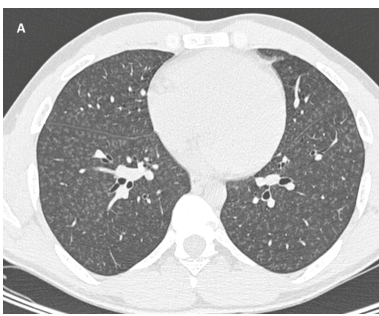

Talc pneumoconiosis is a mineral dust lung disease caused by deposition of respirable talc, a hydrated magnesium silicate. Retained particles are taken up by alveolar macrophages but cleared poorly, provoking a foreign-body giant cell reaction and centrilobular granulomas that progress to stellate interstitial fibrosis. Two routes deliver talc to the lung and produce anatomically distinct disease: occupational or heavy cosmetic inhalation deposits dust in the distal airways and interstitium, whereas intravenous injection of crushed oral tablets embolizes talc and other insoluble excipients into pulmonary arterioles, producing perivascular granulomas that can lead to pulmonary arterial hypertension. A persistent attribution problem runs through the occupational literature, because commercial talc ore frequently carries quartz and amphibole minerals whose own fibrogenicity is not separable from talc's in most cohorts.
Ask a research question about Talc Pneumoconiosis. OpenScientist will conduct autonomous deep research using the Disorder Mechanisms Knowledge Base and PubMed literature (typically 10-30 minutes).
Do not include personal health information in your question. Questions and results are cached in your browser's local storage.
Conditions with similar clinical presentations that must be differentiated from Talc Pneumoconiosis:
name: Talc Pneumoconiosis
creation_date: "2026-10-07T17:11:49Z"
category: Environmental
categories:
- Occupational Lung Disease
- Pneumoconiosis
- Toxic Exposure Disorder
synonyms:
- talcosis
- inhalational talcosis
- talc pneumoconiosis
- pulmonary talcosis
description: >-
Talc pneumoconiosis is a mineral dust lung disease caused by deposition of
respirable talc, a hydrated magnesium silicate. Retained particles are taken up
by alveolar macrophages but cleared poorly, provoking a foreign-body giant cell
reaction and centrilobular granulomas that progress to stellate interstitial
fibrosis. Two routes deliver talc to the lung and produce anatomically distinct
disease: occupational or heavy cosmetic inhalation deposits dust in the distal
airways and interstitium, whereas intravenous injection of crushed oral tablets
embolizes talc and other insoluble excipients into pulmonary arterioles,
producing perivascular granulomas that can lead to pulmonary arterial
hypertension. A persistent attribution problem runs through the occupational
literature, because commercial talc ore frequently carries quartz and amphibole
minerals whose own fibrogenicity is not separable from talc's in most cohorts.
disease_term:
preferred_term: pneumoconiosis due to talc
term:
id: MONDO:0001003
label: pneumoconiosis due to talc
mappings:
mondo_mappings:
- term:
id: MONDO:0001003
label: pneumoconiosis due to talc
mapping_predicate: skos:exactMatch
mapping_source: MONDO
mapping_justification: Primary MONDO disease identifier for pneumoconiosis due to talc.
classifications:
harrisons_chapter:
- classification_value: ENVIRONMENTAL_EXPOSURES
evidence:
- reference: PMID:7093149
reference_title: "Evaluation of respiratory effects in miners and millers exposed to talc free of asbestos and silica."
supports: SUPPORT
evidence_source: HUMAN_CLINICAL
snippet: "Miners and millers of talc ore, free from asbestos and silica, were examined for respiratory effects."
explanation: Identifies the disorder as an occupational inhalational exposure disease, supporting the primary Harrison's home in Occupational and Environmental Lung Disease.
- classification_value: RESPIRATORY
evidence:
- reference: PMID:39030439
reference_title: "The role of pathologists in the diagnosis of occupational lung diseases: an expert opinion of the European Society of Pathology Pulmonary Pathology Working Group."
supports: SUPPORT
evidence_source: OTHER
snippet: "A special form of silicatosis is talc pneumoconiosis or talcosis."
explanation: Supports a secondary respiratory classification by placing the disease within the silicate pneumoconioses.
definitions:
- name: Clinical and pathological case definition for talc pneumoconiosis
definition_type: CASE_DEFINITION
description: >-
Talc pneumoconiosis is a silicatosis: a dust disease of the lung following
deposition of respirable talc, defined by a documented exposure together with
the characteristic pathology of dust-laden macrophages, birefringent
particles, foreign-body giant cells and centrilobular interstitial fibrosis.
scope: Disease-level framing within the silicate pneumoconioses
evidence:
- reference: PMID:39030439
reference_title: "The role of pathologists in the diagnosis of occupational lung diseases: an expert opinion of the European Society of Pathology Pulmonary Pathology Working Group."
supports: SUPPORT
evidence_source: OTHER
snippet: "Silicatosis is a lung condition caused by inhalation of silicates, which comprises silicates such as talc, mica, and kaolinite"
explanation: Places talc among the silicates whose inhalation causes silicatosis, which is the disease family this entry sits in.
- reference: PMID:39030439
reference_title: "The role of pathologists in the diagnosis of occupational lung diseases: an expert opinion of the European Society of Pathology Pulmonary Pathology Working Group."
supports: SUPPORT
evidence_source: OTHER
snippet: "At histology, focal peribronchial and perivascular fibrosis is associated with abundant dust deposits containing needle-shaped bluish-gray birefringent particles associated with giant cell response"
explanation: States the defining histological combination of birefringent dust deposits, giant cell reaction and focal fibrosis.
- name: Histopathological diagnostic criteria for talc pneumoconiosis
definition_type: DIAGNOSTIC_CRITERIA
description: >-
Diagnosis rests on polarized light microscopy demonstrating birefringent
silicate crystals within centrilobular fibrotic areas, together with the
stellate pattern of centrilobular interstitial fibrosis described as a
medusa head. Morphology alone does not identify the mineral, so exposure
history and mineral analysis remain necessary.
scope: Pathological recognition and the limits of morphology alone
evidence:
- reference: PMID:39030439
reference_title: "The role of pathologists in the diagnosis of occupational lung diseases: an expert opinion of the European Society of Pathology Pulmonary Pathology Working Group."
supports: SUPPORT
evidence_source: OTHER
snippet: "Polarized light microscopy: birefringent crystals (silicates) in the centrilobular fibrotic brown areas of silicatosis."
explanation: States the specific polarized-light finding used diagnostically.
- reference: PMID:34401315
reference_title: "Pulmonary talcosis in the setting of cosmetic talcum powder use."
supports: SUPPORT
evidence_source: HUMAN_CLINICAL
snippet: "Biopsy samples revealed abundant macrophages with white crystals that were negatively birefringent under polarized light indicative of talc crystals"
explanation: A worked application of the same technique, here establishing the diagnosis after an inhalational cosmetic exposure.
- reference: PMID:39030439
reference_title: "The role of pathologists in the diagnosis of occupational lung diseases: an expert opinion of the European Society of Pathology Pulmonary Pathology Working Group."
supports: SUPPORT
evidence_source: OTHER
snippet: "The typical features comprise patchy and stellate-shaped centrilobular interstitial fibrosis (so-called \"medusa head\") composed of a mixture of fibroblasts, collagen fibres, and dust-filled macrophages."
explanation: States the characteristic stellate centrilobular fibrosis pattern and its cellular composition.
parents:
- pneumoconiosis
has_subtypes:
- name: Inhalational Talcosis
display_name: Inhalational talcosis (occupational or cosmetic dust exposure)
description: >-
The pneumoconiosis proper. Respirable talc dust inhaled during mining,
milling, bagging and manufacture, or during heavy cosmetic powder use,
deposits in distal airways and the interstitium and produces centrilobular
granulomas with stellate interstitial fibrosis. Mortality from pneumoconiosis
is markedly raised in talc-industry cohorts.
evidence:
- reference: PMID:32816595
reference_title: "Inhalation Toxicity of Talc."
supports: SUPPORT
evidence_source: OTHER
snippet: "The industrial mining, milling, and processing of talc ore is associated with elevated incidences of fibrotic and neoplastic diseases, which are also seen among workers exposed to RTP in secondary industries and individuals using processed cosmetic talc for personal use."
explanation: Supports both the occupational and the cosmetic inhalational routes belonging to this subtype.
- reference: PMID:36287869
reference_title: "Risk of Mortality from Respiratory Malignant and Non-Malignant Diseases among Talc Miners and Millers: A Systematic Review and Meta-Analysis."
supports: SUPPORT
evidence_source: HUMAN_CLINICAL
snippet: "There was increased mortality for pneumoconiosis, especially in the miner's group (SMR = 7.90, CI 95% 2.77-22.58) and especially in those exposed to higher quartz concentration"
explanation: Quantifies the pneumoconiosis mortality excess in occupationally exposed cohorts, and records that it was greatest where quartz co-exposure was higher.
- name: Intravascular Talcosis
display_name: Intravascular talcosis (injected tablet excipients)
description: >-
An anatomically distinct disease reached by a different route. Crushed oral
tablets injected intravenously deliver talc together with other insoluble
excipients into the pulmonary vasculature, where they embolize and provoke
perivascular foreign-body granulomas. Granulomas sit close to the pulmonary
vessels rather than in the centrilobular interstitium, and the disease can
progress to pulmonary arterial hypertension.
evidence:
- reference: PMID:40881529
reference_title: "Pulmonary Arterial Hypertension Due to Talc Granulomatosis Following Intravenous Use of Oral Medications: A Report of a Rare Case."
supports: SUPPORT
evidence_source: HUMAN_CLINICAL
snippet: "Pulmonary talcosis is a rare granulomatous lung disease resulting from the intravenous injection of crushed oral tablets containing insoluble excipients such as talc, microcrystalline cellulose, and crospovidone."
explanation: Defines this subtype by its exposure route and records that the injected material is a mixture of excipients rather than talc alone.
- reference: PMID:39030439
reference_title: "The role of pathologists in the diagnosis of occupational lung diseases: an expert opinion of the European Society of Pathology Pulmonary Pathology Working Group."
supports: SUPPORT
evidence_source: OTHER
snippet: "talc is a frequent filler in medications used for oral consumption or may reach the lungs by the vascular route in drug abusers (intravenous injection of crushed tablets; in this case the talc granulomas are localized close to the pulmonary vasculature)"
explanation: States the anatomical distinction that separates this subtype from the inhalational form, with granulomas localized to the pulmonary vasculature.
progression:
- phase: Variable latency from exposure to symptoms
notes: >-
The interval between exposure and symptoms is not fixed. Reported cases span
months to four decades, so a remote exposure does not exclude the diagnosis
and a recent one does not date the disease.
evidence:
- reference: PMID:34401315
reference_title: "Pulmonary talcosis in the setting of cosmetic talcum powder use."
supports: SUPPORT
quote_role: BACKGROUND
evidence_source: HUMAN_CLINICAL
snippet: "Among documented cases, there have been patients who manifested symptoms only months after exposure, as well as those who became symptomatic up to four decades after exposure"
explanation: >-
States the latency range across the reported literature. quote_role
BACKGROUND because it summarizes other authors' cases rather than this one;
those cases are human, which is what evidence_source grades.
- phase: Particle retention with radiographic opacities
notes: >-
The earliest recognized stage is retained dust with small round or irregular
radiographic opacities, which can be present in workers who have never
smoked and before symptoms dominate.
evidence:
- reference: PMID:7093149
reference_title: "Evaluation of respiratory effects in miners and millers exposed to talc free of asbestos and silica."
supports: SUPPORT
evidence_source: HUMAN_CLINICAL
snippet: "Of the 12 subjects whose chest radiographs showed small round or irregular opacities (perfusion 1/0 or greater), five had never smoked cigarettes."
explanation: Supports an early radiographic stage, and establishes it in never-smokers so that smoking does not explain it away.
- phase: Accelerated loss of lung function
notes: >-
Function declines faster than predicted, and the excess persists after
adjusting for cigarette smoking, which is what identifies the dust exposure
rather than tobacco as the driver.
evidence:
- reference: PMID:7093149
reference_title: "Evaluation of respiratory effects in miners and millers exposed to talc free of asbestos and silica."
supports: SUPPORT
evidence_source: HUMAN_CLINICAL
snippet: "Pulmonary function values at the time of the initial study were less than predicted and the rates of loss of FEV1 and FVC greater than expected."
explanation: Supports progressive functional decline measured over follow-up in an exposed cohort.
- reference: PMID:7093149
reference_title: "Evaluation of respiratory effects in miners and millers exposed to talc free of asbestos and silica."
supports: SUPPORT
evidence_source: HUMAN_CLINICAL
snippet: "There was evidence of an exposure effect after adjusting for cigarette smoking and we conclude that these workers have been affected by their exposures."
explanation: Supports attribution of the decline to the dust exposure rather than to smoking.
- phase: Variable course after exposure ends in the intravascular form
notes: >-
One reported intravascular case was followed for three years with clinical
stability and no disease-specific treatment, so established disease is not
invariably progressive. That is a single case, and it is not the usual
account: the review of this presentation states that most patients decline.
Both are recorded here rather than one standing for the course.
evidence:
- reference: PMID:28538785
reference_title: "Pulmonary talcosis caused by intravenous methadone injection."
supports: SUPPORT
evidence_source: HUMAN_CLINICAL
snippet: "During 3 years of follow-up, the patient showed clinical stability with the persistence of dyspnea on exertion and dry cough."
explanation: Documents three years of clinical stability, with persistent symptoms, in one intravascular case.
- reference: PMID:40881529
reference_title: "Pulmonary Arterial Hypertension Due to Talc Granulomatosis Following Intravenous Use of Oral Medications: A Report of a Rare Case."
supports: REFUTE
evidence_source: HUMAN_CLINICAL
snippet: "It is important to note that most patients have a poor prognosis due to the progressive decline in pulmonary function."
explanation: >-
Counterweight to the phase as stated. If most patients decline
progressively, a stable three-year course is not the typical outcome, and
this phase should be read as one documented possibility.
pathophysiology:
- name: Respirable talc deposition in the distal lung
description: >-
Inhaled respirable talc deposits in the distal airways and the
alveolar-interstitial compartment. The inhaled material is not pure: a
substantial fraction behaves as fibres rather than compact particles, and
commercial talc ore carries accessory minerals including tremolite,
anthophyllite and quartz.
biological_scale: ORGANISM
locations:
- preferred_term: lung
term:
id: UBERON:0002048
label: lung
- preferred_term: terminal bronchiole
term:
id: UBERON:0002187
label: terminal bronchiole
chemical_entities:
- preferred_term: talc
term:
id: CHEBI:32178
label: Talc
biological_processes:
- preferred_term: response to toxic substance
modifier: INCREASED
term:
id: GO:0009636
label: response to toxic substance
evidence:
- reference: PMID:32816595
reference_title: "Inhalation Toxicity of Talc."
supports: SUPPORT
evidence_source: OTHER
snippet: "Respirable talc powder (RTP) is a complex mineral mixture of talc along with accessory minerals, including tremolite, anthophyllite, quartz, magnesite, dolomite, antigorite, lizardite, and chlorite."
explanation: Establishes that the deposited material is a mineral mixture, which is what makes the attribution of downstream injury to talc alone difficult.
- reference: PMID:32498698
reference_title: "Analysis of particles from hamster lungs following pulmonary talc exposures: implications for pathogenicity."
supports: SUPPORT
evidence_source: MODEL_ORGANISM
snippet: "fibers with aspect ratios 3:1 accounted for 22% of instilled material, mostly as fibrous talc"
explanation: Quantifies the fibrous fraction of the instilled talc, which is the dimensional property relevant to deposition and clearance.
downstream:
- target: Alveolar macrophage uptake with impaired clearance
causal_link_type: DIRECT
description: Deposited particles are phagocytosed by alveolar macrophages, but cleared poorly.
evidence:
- reference: PMID:32498698
reference_title: "Analysis of particles from hamster lungs following pulmonary talc exposures: implications for pathogenicity."
supports: SUPPORT
evidence_source: MODEL_ORGANISM
snippet: "Phagocytosis of talc fibers by macrophages was observed"
explanation: Supports the step from deposition to macrophage uptake, measured directly in talc-exposed animals.
- name: Alveolar macrophage uptake with impaired clearance
description: >-
Alveolar macrophages phagocytose talc particles, but clearance falls away
over time: in hamsters, initial uptake of talc was high yet by two weeks
phagocytosis by lavaged cells was significantly lower than for granite dust.
Particles end up not only in macrophages but in neutrophils and
multinucleate giant cells.
biological_scale: CELLULAR
cell_types:
- preferred_term: alveolar macrophage
term:
id: CL:0000583
label: alveolar macrophage
- preferred_term: neutrophil
term:
id: CL:0000775
label: neutrophil
biological_processes:
- preferred_term: macrophage activation
modifier: INCREASED
term:
id: GO:0042116
label: macrophage activation
- preferred_term: inflammatory response
modifier: INCREASED
term:
id: GO:0006954
label: inflammatory response
evidence:
- reference: PMID:32498698
reference_title: "Analysis of particles from hamster lungs following pulmonary talc exposures: implications for pathogenicity."
supports: SUPPORT
evidence_source: MODEL_ORGANISM
snippet: "over the 14-day experiment, talc phagocytosis by lavaged cells was significantly less than that of granite"
explanation: Directly supports failing particle clearance over two weeks, which is what allows retention rather than resolution.
- reference: PMID:32498698
reference_title: "Analysis of particles from hamster lungs following pulmonary talc exposures: implications for pathogenicity."
supports: SUPPORT
evidence_source: MODEL_ORGANISM
snippet: "birefringent particles were found in macrophages, neutrophils, and multinucleate giant cells in lavaged cells from talc-exposed animals"
explanation: Supports particle handling by three cell populations, including the giant cells that define the next step.
- reference: PMID:32498698
reference_title: "Analysis of particles from hamster lungs following pulmonary talc exposures: implications for pathogenicity."
supports: SUPPORT
evidence_source: MODEL_ORGANISM
snippet: "BAL cell counts confirmed the presence of acute inflammation, which followed intratracheal instillation."
explanation: >-
The measured inflammatory response behind this node's macrophage
activation and inflammatory response terms, which no other snippet here
states.
- reference: PMID:27446215
reference_title: "Pulmonary Talcosis in an Immunocompromised Patient."
supports: SUPPORT
quote_role: BACKGROUND
evidence_source: HUMAN_CLINICAL
snippet: "After inhalational exposure, some talc particles are cleared by the tracheobronchial tree. However, if cleared insufficiently due to prolonged exposure or exposure to high quantities or both, pulmonary talcosis may develop."
explanation: >-
States the clearance-failure step in humans, which the hamster data measure
but cannot establish for human lungs. quote_role BACKGROUND because the
sentence restates established physiology rather than this paper's own case
result; evidence_source grades the human clearance it describes.
notes: >-
Measured in hamsters after a single intratracheal instillation followed for
14 days. Instillation is not inhalation and the follow-up is short, so the
human long-term kinetics are inferred rather than demonstrated.
downstream:
- target: Foreign-body giant cell granuloma formation
causal_link_type: DIRECT
description: Poorly cleared particles drive a multinucleate foreign-body giant cell reaction.
evidence:
- reference: PMID:32498698
reference_title: "Analysis of particles from hamster lungs following pulmonary talc exposures: implications for pathogenicity."
supports: SUPPORT
evidence_source: MODEL_ORGANISM
snippet: "birefringent particles were found in macrophages, neutrophils, and multinucleate giant cells in lavaged cells from talc-exposed animals"
explanation: Supports the step to multinucleate giant cells containing the retained particles.
- name: Foreign-body giant cell granuloma formation
description: >-
Retained birefringent particles sit within granulomas formed by
multinucleated foreign-body giant cells. On biopsy these appear as giant cell
granulomas containing birefringent material, and under polarized light the
crystals are visible inside the fibrotic areas.
biological_scale: TISSUE
locations:
- preferred_term: lung
term:
id: UBERON:0002048
label: lung
cell_types:
- preferred_term: multinucleated giant cell
term:
id: CL:0000647
label: multinucleated giant cell
biological_processes:
- preferred_term: granuloma formation
modifier: INCREASED
term:
id: GO:0002432
label: granuloma formation
evidence:
- reference: PMID:39030439
reference_title: "The role of pathologists in the diagnosis of occupational lung diseases: an expert opinion of the European Society of Pathology Pulmonary Pathology Working Group."
supports: SUPPORT
evidence_source: OTHER
snippet: "At histology, focal peribronchial and perivascular fibrosis is associated with abundant dust deposits containing needle-shaped bluish-gray birefringent particles associated with giant cell response"
explanation: Supports the giant cell response accompanying the dust deposits as the characteristic histology.
- reference: PMID:27446215
reference_title: "Pulmonary Talcosis in an Immunocompromised Patient."
supports: SUPPORT
quote_role: BACKGROUND
evidence_source: HUMAN_CLINICAL
snippet: "Inhalational talc has been associated with histological patterns of diffuse interstitial fibrosis, nodular fibrosis, and foreign body granulomatosis"
explanation: >-
Names foreign-body granulomatosis as a histological pattern of inhalational
talc specifically, which is the route this branch models.
- reference: PMID:34401315
reference_title: "Pulmonary talcosis in the setting of cosmetic talcum powder use."
supports: SUPPORT
quote_role: BACKGROUND
evidence_source: HUMAN_CLINICAL
snippet: "Once in the lungs, talc can cause non-necrotizing granulomas to form"
explanation: States granuloma formation as the consequence of talc reaching the lung, for the inhalational route.
- reference: PMID:32498698
reference_title: "Analysis of particles from hamster lungs following pulmonary talc exposures: implications for pathogenicity."
supports: SUPPORT
evidence_source: MODEL_ORGANISM
snippet: "birefringent particles were found in macrophages, neutrophils, and multinucleate giant cells in lavaged cells from talc-exposed animals"
explanation: >-
Giant cells containing birefringent talc after airway talc exposure, which
is the inhalational counterpart of the human biopsy picture. Kept in place
of the intravenous biopsy evidence that previously sat on this node, since
this branch models the occupational disease.
downstream:
- target: Stellate centrilobular interstitial fibrosis
causal_link_type: DIRECT
description: Persistent granulomatous inflammation organizes into centrilobular interstitial fibrosis.
evidence:
- reference: PMID:39030439
reference_title: "The role of pathologists in the diagnosis of occupational lung diseases: an expert opinion of the European Society of Pathology Pulmonary Pathology Working Group."
supports: SUPPORT
evidence_source: OTHER
snippet: "The typical features comprise patchy and stellate-shaped centrilobular interstitial fibrosis (so-called \"medusa head\") composed of a mixture of fibroblasts, collagen fibres, and dust-filled macrophages."
explanation: States the fibrotic lesion that contains the dust-filled macrophages, linking the granulomatous reaction to the fibrosis.
- reference: PMID:34401315
reference_title: "Pulmonary talcosis in the setting of cosmetic talcum powder use."
supports: SUPPORT
quote_role: BACKGROUND
evidence_source: HUMAN_CLINICAL
snippet: "The resulting chronic inflammation causes fibrosis, and potentially restrictive pulmonary disease and pulmonary hypertension in later phases."
explanation: >-
States the granulomatous-inflammation-to-fibrosis step directly, for the
inhalational route, which no other item on this edge did.
- reference: PMID:27446215
reference_title: "Pulmonary Talcosis in an Immunocompromised Patient."
supports: SUPPORT
quote_role: BACKGROUND
evidence_source: HUMAN_CLINICAL
snippet: "Talc particles cause disease by being entrapped in the pulmonary parenchyma or vasculature causing a granulomatous reaction resulting in fibrotic lesions"
explanation: States the same step and, usefully, states it for both the parenchymal and the vascular route in one sentence.
- target: Granulomatosis
causal_link_type: DIRECT
description: The granulomatous reaction is itself the clinically and radiologically recognized lesion.
evidence:
- reference: PMID:39030439
reference_title: "The role of pathologists in the diagnosis of occupational lung diseases: an expert opinion of the European Society of Pathology Pulmonary Pathology Working Group."
supports: SUPPORT
evidence_source: OTHER
snippet: "At histology, focal peribronchial and perivascular fibrosis is associated with abundant dust deposits containing needle-shaped bluish-gray birefringent particles associated with giant cell response"
explanation: >-
The giant cell reaction around the dust deposits is the granulomatous
lesion this edge names, stated for the occupational disease rather than
for an injection case.
- name: Stellate centrilobular interstitial fibrosis
description: >-
Fibroblasts and collagen accumulate around the retained dust, producing the
patchy stellate centrilobular interstitial fibrosis that defines the
silicatoses. Focal peribronchial and perivascular fibrosis accompanies it.
biological_scale: TISSUE
locations:
- preferred_term: lung connective tissue
term:
id: UBERON:0000114
label: lung connective tissue
cell_types:
- preferred_term: fibroblast
term:
id: CL:0000057
label: fibroblast
biological_processes:
- preferred_term: collagen fibril organization
modifier: INCREASED
term:
id: GO:0030199
label: collagen fibril organization
- preferred_term: extracellular matrix organization
modifier: INCREASED
term:
id: GO:0030198
label: extracellular matrix organization
evidence:
- reference: PMID:39030439
reference_title: "The role of pathologists in the diagnosis of occupational lung diseases: an expert opinion of the European Society of Pathology Pulmonary Pathology Working Group."
supports: SUPPORT
evidence_source: OTHER
snippet: "Silicatosis or other rare forms of dust: stellate-shaped centrilobular interstitial fibrosis composed of a mixture of fibroblasts, collagen fibres, and dust-filled macrophages."
explanation: Directly supports the fibrotic lesion and names its fibroblast and collagen composition.
downstream:
- target: Pulmonary fibrosis
causal_link_type: DIRECT
description: The lesion presents clinically and radiologically as pulmonary fibrosis.
evidence:
- reference: PMID:39030439
reference_title: "The role of pathologists in the diagnosis of occupational lung diseases: an expert opinion of the European Society of Pathology Pulmonary Pathology Working Group."
supports: SUPPORT
evidence_source: OTHER
snippet: "focal peribronchial and perivascular fibrosis is associated with abundant dust deposits"
explanation: Supports established fibrosis as the tissue outcome of the dust deposition.
- target: Small rounded and irregular radiographic opacities
causal_link_type: DIRECT
description: The fibrotic lesion and its retained dust are what the radiograph shows as small irregular opacities.
evidence:
- reference: PMID:39030439
reference_title: "The role of pathologists in the diagnosis of occupational lung diseases: an expert opinion of the European Society of Pathology Pulmonary Pathology Working Group."
supports: SUPPORT
evidence_source: OTHER
snippet: "Clinical and functional features are similar to silicosis, whereas the radiographic opacities are more irregular."
explanation: States the radiographic expression of the talcotic lesion, and its irregular character.
- target: Dyspnea
causal_link_type: DIRECT
description: Fibrosis impairs ventilation and gas transfer, producing breathlessness.
evidence:
- reference: PMID:39030439
reference_title: "The role of pathologists in the diagnosis of occupational lung diseases: an expert opinion of the European Society of Pathology Pulmonary Pathology Working Group."
supports: SUPPORT
directness: INDIRECT
evidence_source: OTHER
snippet: "Symptoms exhibited by affected individuals are often nonspecific, such as cough or shortness of breath, mimicking other respiratory conditions and complicating the diagnosis."
explanation: >-
Graded INDIRECT because the source states breathlessness as the
presentation of occupational lung disease as a class rather than
measuring it against this entry's fibrotic lesion. It replaces an
intravenous case report, which should not carry an edge in the
inhalational chain.
- target: Cough
causal_link_type: DIRECT
description: The fibrotic and granulomatous lesion provokes the chronic cough patients present with.
evidence:
- reference: PMID:34401315
reference_title: "Pulmonary talcosis in the setting of cosmetic talcum powder use."
supports: SUPPORT
directness: INDIRECT
quote_role: BACKGROUND
evidence_source: HUMAN_CLINICAL
snippet: "the presenting symptoms of pulmonary talcosis are nonspecific and include dyspnea on exertion, cough, weight loss, anorexia, and diaphoresis"
explanation: >-
Graded INDIRECT because the source lists cough as a presenting symptom of
the disease rather than tying it to this lesion by measurement.
- target: Reduced forced expiratory volume in one second
causal_link_type: DIRECT
description: Fibrosis and airway damage reduce measured expiratory flow over time.
evidence:
- reference: PMID:7093149
reference_title: "Evaluation of respiratory effects in miners and millers exposed to talc free of asbestos and silica."
supports: SUPPORT
evidence_source: HUMAN_CLINICAL
snippet: "Pulmonary function values at the time of the initial study were less than predicted and the rates of loss of FEV1 and FVC greater than expected."
explanation: Supports accelerated decline in measured expiratory volume in exposed workers.
- name: Intravascular excipient embolization
description: >-
The alternative route. Crushed oral tablets injected intravenously deliver
talc together with microcrystalline cellulose and crospovidone into the
pulmonary circulation, where the insoluble particles embolize in arterioles
and capillaries. Because the injected material is a mixture, a birefringent
particle on biopsy does not establish that the agent was talc.
biological_scale: ORGANISM
locations:
- preferred_term: pulmonary artery
term:
id: UBERON:0002012
label: pulmonary artery
chemical_entities:
- preferred_term: talc
term:
id: CHEBI:32178
label: Talc
biological_processes:
- preferred_term: response to toxic substance
modifier: INCREASED
term:
id: GO:0009636
label: response to toxic substance
evidence:
- reference: PMID:40881529
reference_title: "Pulmonary Arterial Hypertension Due to Talc Granulomatosis Following Intravenous Use of Oral Medications: A Report of a Rare Case."
supports: SUPPORT
evidence_source: HUMAN_CLINICAL
snippet: "These substances embolize within the pulmonary vasculature, provoking granulomatous inflammation that may progress to pulmonary arterial hypertension (PAH)."
explanation: Directly supports embolization of the injected excipients within the pulmonary vasculature as the initiating step of this branch.
downstream:
- target: Perivascular foreign-body granulomatosis
causal_link_type: DIRECT
description: Embolized particles provoke granulomatous inflammation around the pulmonary vessels.
evidence:
- reference: PMID:28538785
reference_title: "Pulmonary talcosis caused by intravenous methadone injection."
supports: SUPPORT
evidence_source: HUMAN_CLINICAL
snippet: "The centrilobular nodules were determined histopathologically to be tiny foreign body particles lodged in the centrilobular arterioles and perivascular space."
explanation: Human histopathology locating the particles in the centrilobular arterioles and perivascular space, which is the step this edge asserts.
- name: Perivascular foreign-body granulomatosis
description: >-
Granulomas form around and within the pulmonary arterioles rather than in the
centrilobular interstitium, which is the anatomical signature separating this
branch from the inhalational disease. Radiologically this appears as
centrilobular nodules that spare the subpleural regions and fissures.
biological_scale: TISSUE
locations:
- preferred_term: pulmonary artery
term:
id: UBERON:0002012
label: pulmonary artery
cell_types:
- preferred_term: multinucleated giant cell
term:
id: CL:0000647
label: multinucleated giant cell
biological_processes:
- preferred_term: granuloma formation
modifier: INCREASED
term:
id: GO:0002432
label: granuloma formation
evidence:
- reference: PMID:39030439
reference_title: "The role of pathologists in the diagnosis of occupational lung diseases: an expert opinion of the European Society of Pathology Pulmonary Pathology Working Group."
supports: SUPPORT
evidence_source: OTHER
snippet: "in this case the talc granulomas are localized close to the pulmonary vasculature"
explanation: Directly supports the perivascular localization that distinguishes this branch anatomically.
- reference: PMID:28538785
reference_title: "Pulmonary talcosis caused by intravenous methadone injection."
supports: SUPPORT
evidence_source: HUMAN_CLINICAL
snippet: "The centrilobular nodules were determined histopathologically to be tiny foreign body particles lodged in the centrilobular arterioles and perivascular space."
explanation: Human histopathology of the perivascular and intra-arteriolar particle location.
downstream:
- target: Pulmonary arterial hypertension
causal_link_type: DIRECT
description: Granulomatous involvement of the pulmonary arterioles raises pulmonary vascular resistance.
evidence:
- reference: PMID:40881529
reference_title: "Pulmonary Arterial Hypertension Due to Talc Granulomatosis Following Intravenous Use of Oral Medications: A Report of a Rare Case."
supports: SUPPORT
evidence_source: HUMAN_CLINICAL
snippet: "These substances embolize within the pulmonary vasculature, provoking granulomatous inflammation that may progress to pulmonary arterial hypertension (PAH)."
explanation: The quoted sentence states the progression from perivascular granulomatous inflammation to pulmonary arterial hypertension.
- target: Centrilobular nodules on computed tomography
causal_link_type: DIRECT
description: The particles lodged in the centrilobular arterioles and perivascular space are what computed tomography resolves as centrilobular nodules.
evidence:
- reference: PMID:28538785
reference_title: "Pulmonary talcosis caused by intravenous methadone injection."
supports: SUPPORT
evidence_source: HUMAN_CLINICAL
snippet: "The centrilobular nodules were determined histopathologically to be tiny foreign body particles lodged in the centrilobular arterioles and perivascular space."
explanation: Establishes the histological basis of the nodules seen on imaging.
- target: Granulomatosis
causal_link_type: DIRECT
description: The perivascular granulomas are the recognized lesion of this branch.
evidence:
- reference: PMID:40881529
reference_title: "Pulmonary Arterial Hypertension Due to Talc Granulomatosis Following Intravenous Use of Oral Medications: A Report of a Rare Case."
supports: SUPPORT
evidence_source: HUMAN_CLINICAL
snippet: "Pulmonary talcosis is a rare granulomatous lung disease resulting from the intravenous injection of crushed oral tablets"
explanation: Supports the disease of this branch being a granulomatous lung disease.
phenotypes:
- name: Dyspnea
category: Respiratory
description: >-
Progressive breathlessness is the usual presenting symptom in both routes,
reflecting impaired ventilation and gas transfer.
phenotype_term:
preferred_term: Dyspnea
term:
id: HP:0002094
label: Dyspnea
evidence:
- reference: PMID:28538785
reference_title: "Pulmonary talcosis caused by intravenous methadone injection."
supports: SUPPORT
evidence_source: HUMAN_CLINICAL
snippet: "A 38-year-old woman presented to our pulmonology clinic with complaints of progressive dyspnea and dry cough for more than three months."
explanation: Documents progressive dyspnea as the presenting complaint in a confirmed case.
- reference: PMID:34401315
reference_title: "Pulmonary talcosis in the setting of cosmetic talcum powder use."
supports: SUPPORT
quote_role: BACKGROUND
evidence_source: HUMAN_CLINICAL
snippet: "the presenting symptoms of pulmonary talcosis are nonspecific and include dyspnea on exertion, cough, weight loss, anorexia, and diaphoresis"
explanation: >-
Names dyspnea as a presenting symptom of the disease generally, including
the inhalational route, so this phenotype does not rest on an injection
case alone.
- name: Cough
category: Respiratory
description: >-
Dry cough accompanies the breathlessness.
phenotype_term:
preferred_term: Cough
term:
id: HP:0012735
label: Cough
evidence:
- reference: PMID:28538785
reference_title: "Pulmonary talcosis caused by intravenous methadone injection."
supports: SUPPORT
evidence_source: HUMAN_CLINICAL
snippet: "complaints of progressive dyspnea and dry cough for more than three months"
explanation: Documents dry cough alongside dyspnea in a confirmed case.
- reference: PMID:34401315
reference_title: "Pulmonary talcosis in the setting of cosmetic talcum powder use."
supports: SUPPORT
quote_role: BACKGROUND
evidence_source: HUMAN_CLINICAL
snippet: "the presenting symptoms of pulmonary talcosis are nonspecific and include dyspnea on exertion, cough, weight loss, anorexia, and diaphoresis"
explanation: Names cough among the presenting symptoms of the disease generally, not only of the injection form.
- name: Pulmonary fibrosis
category: Respiratory
description: >-
Interstitial fibrosis in a stellate centrilobular distribution, with focal
peribronchial and perivascular involvement, is the defining structural lesion
of the inhalational form. It is left unscoped because the intravascular route
is also reported to produce interstitial fibrosis, although the stellate
centrilobular pattern is described for the inhalational disease.
phenotype_term:
preferred_term: Pulmonary fibrosis
term:
id: HP:0002206
label: Pulmonary fibrosis
evidence:
- reference: PMID:39030439
reference_title: "The role of pathologists in the diagnosis of occupational lung diseases: an expert opinion of the European Society of Pathology Pulmonary Pathology Working Group."
supports: SUPPORT
evidence_source: OTHER
snippet: "Silicatosis or other rare forms of dust: stellate-shaped centrilobular interstitial fibrosis composed of a mixture of fibroblasts, collagen fibres, and dust-filled macrophages."
explanation: Supports interstitial fibrosis as the characteristic lesion of the silicatoses including talcosis.
- reference: PMID:40881529
reference_title: "Pulmonary Arterial Hypertension Due to Talc Granulomatosis Following Intravenous Use of Oral Medications: A Report of a Rare Case."
supports: SUPPORT
evidence_source: HUMAN_CLINICAL
snippet: "this process can result in PAH and interstitial fibrosis"
explanation: Supports interstitial fibrosis as an outcome of the intravascular route too, which is why this phenotype is not scoped to the inhalational subtype.
- reference: PMID:28538785
reference_title: "Pulmonary talcosis caused by intravenous methadone injection."
supports: SUPPORT
evidence_source: HUMAN_CLINICAL
snippet: "Over time, talc micronodules may coalesce into perihilar conglomerate masses, resembling progressive massive fibrosis from silicosis or coal workers' pneumoconiosis."
explanation: Supports coalescence of the nodular lesions into conglomerate masses, the advanced form of the fibrotic phenotype.
- reference: PMID:27446215
reference_title: "Pulmonary Talcosis in an Immunocompromised Patient."
supports: SUPPORT
quote_role: BACKGROUND
evidence_source: HUMAN_CLINICAL
snippet: "Inhalational talc has been associated with histological patterns of diffuse interstitial fibrosis, nodular fibrosis, and foreign body granulomatosis"
explanation: Names the fibrotic patterns of the inhalational route specifically, which this phenotype now covers for both routes.
- name: Granulomatosis
category: Respiratory
description: >-
Foreign-body granulomas containing birefringent particles are present in both
routes, differing in location: centrilobular and interstitial after
inhalation, perivascular after injection.
phenotype_term:
preferred_term: Granulomatosis
term:
id: HP:0002955
label: Granulomatosis
evidence:
- reference: PMID:28538785
reference_title: "Pulmonary talcosis caused by intravenous methadone injection."
supports: SUPPORT
evidence_source: HUMAN_CLINICAL
snippet: "Transbronchial biopsy performed in the left lower lobe showed multinucleated giant cell granulomas with birefringent foreign material, compatible with talc"
explanation: Human biopsy confirmation of giant cell granulomas with birefringent material.
- name: Lower lobe panacinar emphysema
category: Respiratory
subtype: Intravascular Talcosis
description: >-
Advanced intravascular talcosis is reported with panacinar, lower
lobe-predominant emphysema on high-resolution computed tomography. No
mechanism for it is established here, so it carries no incoming causal edge.
phenotype_term:
preferred_term: lower lobe panacinar emphysema
term:
id: HP:0032967
label: Panacinar emphysema
evidence:
- reference: PMID:40881529
reference_title: "Pulmonary Arterial Hypertension Due to Talc Granulomatosis Following Intravenous Use of Oral Medications: A Report of a Rare Case."
supports: SUPPORT
evidence_source: HUMAN_CLINICAL
snippet: "high-resolution computed tomography (HRCT) can demonstrate nodular opacities, diffuse ground-glass patterns, and lower lobe-predominant panacinar emphysema"
explanation: States lower lobe-predominant panacinar emphysema among the imaging findings of this presentation.
- reference: PMID:40881529
reference_title: "Pulmonary Arterial Hypertension Due to Talc Granulomatosis Following Intravenous Use of Oral Medications: A Report of a Rare Case."
supports: SUPPORT
evidence_source: HUMAN_CLINICAL
snippet: "In advanced cases, manifestations may include cor pulmonale, panlobular emphysema"
explanation: Supports emphysema as a manifestation of advanced disease, under its panlobular synonym.
- name: Pulmonary arterial hypertension
category: Cardiovascular
description: >-
Granulomatous involvement of the pulmonary arterioles can raise pulmonary
arterial pressure, with right ventricular strain and elevated right
ventricular pressures on imaging. It is best documented in the intravascular
form, where the lesion sits on the vasculature, but it is also reported in
advanced inhalational disease, so the phenotype is not scoped to one subtype.
phenotype_term:
preferred_term: Pulmonary arterial hypertension
term:
id: HP:0002092
label: Pulmonary arterial hypertension
evidence:
- reference: PMID:40881529
reference_title: "Pulmonary Arterial Hypertension Due to Talc Granulomatosis Following Intravenous Use of Oral Medications: A Report of a Rare Case."
supports: SUPPORT
evidence_source: HUMAN_CLINICAL
snippet: "These substances embolize within the pulmonary vasculature, provoking granulomatous inflammation that may progress to pulmonary arterial hypertension (PAH)."
explanation: Supports pulmonary arterial hypertension as a documented consequence of the intravascular form.
- reference: PMID:40881529
reference_title: "Pulmonary Arterial Hypertension Due to Talc Granulomatosis Following Intravenous Use of Oral Medications: A Report of a Rare Case."
supports: SUPPORT
evidence_source: HUMAN_CLINICAL
snippet: "Imaging revealed elevated right ventricular pressures and computed tomography (CT) findings of centrilobular nodules with sparing of the subpleural regions and fissures, characteristic of talc granulomatosis."
explanation: Documents the measured right ventricular pressure elevation in a confirmed case.
- reference: PMID:27446215
reference_title: "Pulmonary Talcosis in an Immunocompromised Patient."
supports: SUPPORT
evidence_source: HUMAN_CLINICAL
snippet: "consistent with severe pulmonary hypertension"
explanation: >-
Severe pulmonary hypertension on echocardiography in a patient whose talc
exposure was inhaled cosmetic powder rather than injection. Read with its
confounders: this man was 82 with chronic obstructive pulmonary disease, 30
pack-years and terminal leukaemia, and his talcosis was a clinical
diagnosis because biopsy was not pursued, so his pulmonary hypertension has
competing causes. The biopsy-confirmed case below is the stronger support
for unscoping this phenotype.
- reference: PMID:27446215
reference_title: "Pulmonary Talcosis in an Immunocompromised Patient."
supports: SUPPORT
quote_role: BACKGROUND
evidence_source: HUMAN_CLINICAL
snippet: "In another reported case in 1977, a ten-year-old child, who had accidentally inhaled a large quantity of baby talcum powder once at the age of two, was diagnosed with pulmonary fibrosis with evidence of pulmonary hypertension and biopsy evidence of pulmonary talcosis"
explanation: >-
Biopsy-confirmed talcosis with pulmonary hypertension after a single
inhalational exposure, and no injection, which is the cleanest support for
this phenotype occurring by the inhalational route.
- reference: PMID:34401315
reference_title: "Pulmonary talcosis in the setting of cosmetic talcum powder use."
supports: SUPPORT
quote_role: BACKGROUND
evidence_source: HUMAN_CLINICAL
snippet: "The resulting chronic inflammation causes fibrosis, and potentially restrictive pulmonary disease and pulmonary hypertension in later phases."
explanation: Names pulmonary hypertension as a late consequence of the inhalational route as well.
- name: Reduced forced expiratory volume in one second
category: Laboratory
subtype: Inhalational Talcosis
description: >-
Expiratory volume and vital capacity decline faster than predicted in exposed
workers, and the excess decline persists after adjustment for smoking.
phenotype_term:
preferred_term: Reduced forced expiratory volume in one second
term:
id: HP:0032342
label: Reduced forced expiratory volume in one second
evidence:
- reference: PMID:7093149
reference_title: "Evaluation of respiratory effects in miners and millers exposed to talc free of asbestos and silica."
supports: SUPPORT
evidence_source: HUMAN_CLINICAL
snippet: "Pulmonary function values at the time of the initial study were less than predicted and the rates of loss of FEV1 and FVC greater than expected."
explanation: Supports reduced and declining expiratory volume in a cohort exposed to talc free of asbestos and silica.
- name: Small rounded and irregular radiographic opacities
category: Respiratory
description: >-
Small round or irregular opacities on the chest radiograph are the imaging
expression of retained dust and the granulomatous reaction to it. In talcosis
the opacities are more irregular than the rounded opacities of silicosis.
phenotype_term:
preferred_term: small rounded and irregular radiographic opacities
term:
id: HP:0002207
label: Diffuse reticular or finely nodular infiltrations
evidence:
- reference: PMID:7093149
reference_title: "Evaluation of respiratory effects in miners and millers exposed to talc free of asbestos and silica."
supports: SUPPORT
evidence_source: HUMAN_CLINICAL
snippet: "Of the 12 subjects whose chest radiographs showed small round or irregular opacities (perfusion 1/0 or greater), five had never smoked cigarettes."
explanation: Supports radiographic opacities in exposed workers, including never-smokers.
- reference: PMID:39030439
reference_title: "The role of pathologists in the diagnosis of occupational lung diseases: an expert opinion of the European Society of Pathology Pulmonary Pathology Working Group."
supports: SUPPORT
evidence_source: OTHER
snippet: "Clinical and functional features are similar to silicosis, whereas the radiographic opacities are more irregular."
explanation: Supports the irregular character of the opacities, which is what distinguishes them radiographically from silicosis.
- name: Centrilobular nodules on computed tomography
category: Respiratory
description: >-
Both routes produce centrilobular nodules, and the distribution differs. In
the intravascular form they spare the subpleural regions and the fissures, a
pattern the reporting authors treat as characteristic of talc
granulomatosis; after inhalation they are typically middle- or upper-lobe
predominant with ground-glass opacity. The phenotype is left unscoped for
that reason, with the route-specific distributions in the evidence.
phenotype_term:
preferred_term: centrilobular nodules on computed tomography
term:
id: HP:0025392
label: Nodular pattern on pulmonary HRCT
evidence:
- reference: PMID:40881529
reference_title: "Pulmonary Arterial Hypertension Due to Talc Granulomatosis Following Intravenous Use of Oral Medications: A Report of a Rare Case."
supports: SUPPORT
evidence_source: HUMAN_CLINICAL
snippet: "Imaging revealed elevated right ventricular pressures and computed tomography (CT) findings of centrilobular nodules with sparing of the subpleural regions and fissures, characteristic of talc granulomatosis."
explanation: States the computed tomography pattern and its distribution in an intravascular case.
- reference: PMID:28538785
reference_title: "Pulmonary talcosis caused by intravenous methadone injection."
supports: SUPPORT
evidence_source: HUMAN_CLINICAL
snippet: "The centrilobular nodules were determined histopathologically to be tiny foreign body particles lodged in the centrilobular arterioles and perivascular space."
explanation: Ties the nodules seen on imaging to the particles lodged in the centrilobular arterioles.
- reference: PMID:34401315
reference_title: "Pulmonary talcosis in the setting of cosmetic talcum powder use."
supports: SUPPORT
quote_role: BACKGROUND
evidence_source: HUMAN_CLINICAL
snippet: "Chest CT in patients who inhale talc is typically characterized by middle- or upper-lobe predominant centrilobular nodules and ground glass opacities"
explanation: States the inhalational distribution, which is why this phenotype is no longer scoped to the intravascular subtype.
- reference: PMID:34401315
reference_title: "Pulmonary talcosis in the setting of cosmetic talcum powder use."
supports: SUPPORT
evidence_source: HUMAN_CLINICAL
snippet: "CT chest demonstrated bilateral centrilobular nodules, now with upper lobe predominance without hilar adenopathy along with a left sided pleural effusion"
explanation: The imaging in the cosmetic-powder case, a worked instance of the inhalational distribution.
environmental:
- name: Non-occupational inhalation of cosmetic and household talcum powder
description: >-
Talc in cosmetic face powder, body powder and baby powder is inhaled during
application. Two reported cases reached pulmonary talcosis this way: a woman
who applied talcum face powder excessively for two years, and a man who
deliberately inhaled scented talcum powder over years. This route is
inhalational, so it belongs to the same subtype as the occupational dust, but
it reaches people with no industrial history at all, which is why both cases
were first misdiagnosed. The first was confirmed on transbronchial biopsy;
the second was a clinical and radiological diagnosis, biopsy having been ruled
out by thrombocytopenia, so it is the weaker of the two.
exposure_term:
preferred_term: exposure to talc dust
term:
id: ECTO:7000028
label: exposure to talc dust
effect: Deposits respirable talc in the distal lung outside any occupational setting.
evidence:
- reference: PMID:34401315
reference_title: "Pulmonary talcosis in the setting of cosmetic talcum powder use."
supports: SUPPORT
evidence_source: HUMAN_CLINICAL
snippet: "the patient admitted to excessive application of talcum face powder for two years prior to her presentation"
explanation: The exposure history that established the diagnosis in a woman with no occupational or injection exposure.
- reference: PMID:27446215
reference_title: "Pulmonary Talcosis in an Immunocompromised Patient."
supports: SUPPORT
evidence_source: HUMAN_CLINICAL
snippet: "he would often inhale lavender-scented talcum powder for relaxation during his business trips for an unspecified number of years"
explanation: A second non-occupational inhalational exposure, here deliberate inhalation rather than cosmetic application.
- reference: PMID:34401315
reference_title: "Pulmonary talcosis in the setting of cosmetic talcum powder use."
supports: SUPPORT
quote_role: BACKGROUND
evidence_source: OTHER
snippet: "talc exposure from household products is often overlooked as a causative agent of inhalation pneumoconiosis"
explanation: >-
States why this route matters clinically. Kept at OTHER because the
sentence is the authors' judgement about clinical attention rather than a
description of evidence, with quote_role BACKGROUND because it is framing
rather than their own case finding.
- reference: PMID:27446215
reference_title: "Pulmonary Talcosis in an Immunocompromised Patient."
supports: SUPPORT
quote_role: BACKGROUND
evidence_source: HUMAN_CLINICAL
snippet: "Pulmonary talcosis is most commonly seen secondary to occupational exposure or intravenous (IV) drug abuse and, occasionally, in excessive use of cosmetic talc."
explanation: Places this route in proportion against the two principal ones, which is the honest reading.
influences_mechanisms:
- target: Respirable talc deposition in the distal lung
environmental_effect: TRIGGERS
causal_link_type: DIRECT
description: Inhalation during cosmetic application or deliberate use delivers respirable talc to the distal lung.
evidence:
- reference: PMID:34401315
reference_title: "Pulmonary talcosis in the setting of cosmetic talcum powder use."
supports: SUPPORT
evidence_source: HUMAN_CLINICAL
snippet: "Biopsy samples revealed abundant macrophages with white crystals that were negatively birefringent under polarized light indicative of talc crystals"
explanation: Confirms talc actually reached and was retained in the distal lung by this route, on biopsy.
notes: >-
Neither source claims cosmetic talc is hazardous in ordinary use. The second
states plainly that there is no substantial evidence that cosmetic talc
presents a health hazard when used as intended; both reported cases involved
heavy or deliberate inhalation. The entry records the route without asserting
a risk at normal use.
- name: Ambient fibrous talc in non-occupationally exposed lungs
description: >-
Fibrous talc is recoverable from the lungs of Japanese women with no
occupational exposure. The reported comparison is narrower than it first
looks: fibrous talc counts were higher in urban lung cancer cases than in
urban non-cancer, rural cancer and rural non-cancer cases, so the contrast is
cancer-stratified and is not a general urban-versus-rural one. The study did
not assess talcosis.
exposure_term:
preferred_term: exposure to talc dust
term:
id: ECTO:7000028
label: exposure to talc dust
environment_context:
preferred_term: urban biome
term:
id: ENVO:01000249
label: urban biome
effect: >-
Fibrous talc is present in the lungs of people with no occupational exposure.
The source of that talc is not established by the study.
evidence:
- reference: PMID:9222135
reference_title: "Talc and amosite/crocidolite preferentially deposited in the lungs of nonoccupational female lung cancer cases in urban areas of Japan."
supports: SUPPORT
evidence_source: HUMAN_CLINICAL
snippet: "Amosite/crocidolite and fibrous talc counts in urban lung cancer cases were greater than those of urban non-lung cancer cases, rural lung cancer, and rural non-lung cancer cases"
explanation: >-
Measures fibrous talc in lung tissue from women without occupational
exposure. Note what the comparison is: urban lung cancer cases against the
other three groups. It does not compare urban non-cancer with rural cases,
so it does not establish a general urban excess, and it does not identify
ambient air as the source of the talc.
- reference: PMID:9222135
reference_title: "Talc and amosite/crocidolite preferentially deposited in the lungs of nonoccupational female lung cancer cases in urban areas of Japan."
supports: NO_EVIDENCE
evidence_source: HUMAN_CLINICAL
snippet: "fibrous talc in urban environments may be another candidate for carcinogenic or cocarcinogenic factors of female lung cancer"
explanation: >-
Recorded as NO_EVIDENCE for this entry's claims. The authors raise ambient
fibrous talc as a candidate lung-cancer factor; that is a hypothesis about
a different disease, and this entry neither asserts nor relies on it.
notes: >-
Deliberately carries no influences_mechanisms link, so it does not appear in
the pathograph. The only claim the source supports is that fibrous talc is
found in some lungs without occupational exposure. It is a case-control count
of lung fibres: it does not show that ambient air was the route, and it says
nothing about this disease, so an edge into the deposition node would add a
claim rather than evidence. The entry is kept as context for non-occupational
exposure, alongside the cosmetic-powder route, which does have case-level
evidence for its route.
- name: Occupational inhalation of respirable talc dust
description: >-
Mining, crushing, milling, bagging and manufacture of talc-containing
products generate respirable talc dust. Pneumoconiosis mortality is markedly
raised in these cohorts, most of all among miners and in cohorts with higher
quartz content.
exposure_term:
preferred_term: exposure to talc dust
term:
id: ECTO:7000028
label: exposure to talc dust
qualifiers:
- predicate:
preferred_term: has input
term:
id: RO:0002233
label: has input
value:
preferred_term: talc
term:
id: CHEBI:32178
label: Talc
environment_context:
preferred_term: factory
term:
id: ENVO:01000536
label: factory
effect: Deposits respirable talc, with its accessory minerals, in the distal lung over years of work.
evidence:
- reference: PMID:32816595
reference_title: "Inhalation Toxicity of Talc."
supports: SUPPORT
evidence_source: OTHER
snippet: "The industrial mining, milling, and processing of talc ore is associated with elevated incidences of fibrotic and neoplastic diseases, which are also seen among workers exposed to RTP in secondary industries and individuals using processed cosmetic talc for personal use."
explanation: Supports industrial talc processing as the principal occupational exposure route.
- reference: PMID:36287869
reference_title: "Risk of Mortality from Respiratory Malignant and Non-Malignant Diseases among Talc Miners and Millers: A Systematic Review and Meta-Analysis."
supports: SUPPORT
evidence_source: HUMAN_CLINICAL
snippet: "There was increased mortality for pneumoconiosis, especially in the miner's group (SMR = 7.90, CI 95% 2.77-22.58) and especially in those exposed to higher quartz concentration"
explanation: Quantifies the mortality consequence of this exposure, and records the quartz-dependence that complicates attributing it to talc.
influences_mechanisms:
- target: Respirable talc deposition in the distal lung
environmental_effect: TRIGGERS
causal_link_type: DIRECT
description: Occupational dust generation delivers respirable talc to the distal lung.
evidence:
- reference: PMID:7093149
reference_title: "Evaluation of respiratory effects in miners and millers exposed to talc free of asbestos and silica."
supports: SUPPORT
evidence_source: HUMAN_CLINICAL
snippet: "There was evidence of an exposure effect after adjusting for cigarette smoking and we conclude that these workers have been affected by their exposures."
explanation: Supports the occupational exposure itself producing respiratory effect, in a cohort where asbestos and silica were absent from the ore.
- name: Intravenous injection of crushed oral tablets
description: >-
Injection of crushed tablets intended for oral use delivers talc filler, with
other insoluble excipients, directly into the venous circulation and so into
the pulmonary arterioles. This is not an occupational pneumoconiosis and its
pathology is perivascular rather than centrilobular.
exposure_term:
preferred_term: exposure to talc
term:
id: ECTO:9000055
label: exposure to talc
qualifiers:
- predicate:
preferred_term: has input
term:
id: RO:0002233
label: has input
value:
preferred_term: talc
term:
id: CHEBI:32178
label: Talc
effect: Delivers insoluble tablet excipients, talc among them, into the pulmonary vasculature.
evidence:
- reference: PMID:40881529
reference_title: "Pulmonary Arterial Hypertension Due to Talc Granulomatosis Following Intravenous Use of Oral Medications: A Report of a Rare Case."
supports: SUPPORT
evidence_source: HUMAN_CLINICAL
snippet: "Pulmonary talcosis is a rare granulomatous lung disease resulting from the intravenous injection of crushed oral tablets containing insoluble excipients such as talc, microcrystalline cellulose, and crospovidone."
explanation: Supports injection of crushed oral tablets as the exposure route for this branch, and names the excipient mixture delivered.
- reference: PMID:39030439
reference_title: "The role of pathologists in the diagnosis of occupational lung diseases: an expert opinion of the European Society of Pathology Pulmonary Pathology Working Group."
supports: SUPPORT
evidence_source: OTHER
snippet: "talc is a frequent filler in medications used for oral consumption or may reach the lungs by the vascular route in drug abusers (intravenous injection of crushed tablets; in this case the talc granulomas are localized close to the pulmonary vasculature)"
explanation: Supports the vascular delivery route and its distinct perivascular pathology.
influences_mechanisms:
- target: Intravascular excipient embolization
environmental_effect: TRIGGERS
causal_link_type: DIRECT
description: Injection places insoluble particles in the venous return, which carries them to the pulmonary arterioles.
evidence:
- reference: PMID:40881529
reference_title: "Pulmonary Arterial Hypertension Due to Talc Granulomatosis Following Intravenous Use of Oral Medications: A Report of a Rare Case."
supports: SUPPORT
evidence_source: HUMAN_CLINICAL
snippet: "These substances embolize within the pulmonary vasculature, provoking granulomatous inflammation that may progress to pulmonary arterial hypertension (PAH)."
explanation: Supports the exposure initiating embolization within the pulmonary vasculature.
animal_models:
- name: Hamster intratracheal talc instillation model
species: Hamster
publication: PMID:32498698
description: >-
Male hamsters given a single intratracheal instillation of talc and followed
for 14 days, with bronchoalveolar lavage cells examined by polarized light
microscopy. The instilled material was characterized by scanning electron
microscopy with energy-dispersive x-ray analysis, and asbestos and quartz
were below detection, which is what makes this a talc-attributable
observation rather than a mixed-mineral one.
modeled_mechanisms:
- target: Alveolar macrophage uptake with impaired clearance
relationship: RECAPITULATES
fidelity: MODERATE
model_scale: CELLULAR
description: >-
Reproduces macrophage phagocytosis of talc and the subsequent decline in
clearance, with particles appearing in macrophages, neutrophils and giant
cells.
limitations: >-
Intratracheal instillation is a bolus delivery that does not reproduce
aerosol deposition during chronic occupational inhalation, the follow-up is
only 14 days against a human disease of years, only male animals were used,
and hamster particle clearance differs from human.
readouts:
- name: Phagocytosis of birefringent talc particles by lavaged cells
target: Alveolar macrophage uptake with impaired clearance
direction: DECREASED
interpretation: Falling particle uptake over 14 days, the clearance failure this node asserts.
evidence:
- reference: PMID:32498698
reference_title: "Analysis of particles from hamster lungs following pulmonary talc exposures: implications for pathogenicity."
supports: SUPPORT
evidence_source: MODEL_ORGANISM
snippet: "over the 14-day experiment, talc phagocytosis by lavaged cells was significantly less than that of granite"
explanation: Reports the measured decline in talc phagocytosis relative to a comparator dust.
evidence:
- reference: PMID:32498698
reference_title: "Analysis of particles from hamster lungs following pulmonary talc exposures: implications for pathogenicity."
supports: SUPPORT
evidence_source: MODEL_ORGANISM
snippet: "Phagocytosis of talc fibers by macrophages was observed"
explanation: Supports treating this model as informative for the macrophage uptake node.
evidence:
- reference: PMID:32498698
reference_title: "Analysis of particles from hamster lungs following pulmonary talc exposures: implications for pathogenicity."
supports: SUPPORT
evidence_source: MODEL_ORGANISM
snippet: "birefringent particles were found in macrophages, neutrophils, and multinucleate giant cells in lavaged cells from talc-exposed animals"
explanation: Characterizes the cellular distribution of retained particles in this model.
treatments:
- name: Cessation of talc exposure
description: >-
Removing the exposure is the only intervention that acts on the cause. No
treatment reverses established fibrosis, and spontaneous resolution of
established fibrosis is not established, so prevention of further deposition
is the actionable step. Cessation is not a cure: established disease is
reported to progress even after every exposure has stopped.
therapeutic_modality: BEHAVIORAL
treatment_term:
preferred_term: talc dust exposure avoidance
term:
id: NCIT:C15900
label: Lifestyle Therapy
qualifiers:
- predicate:
preferred_term: has input
term:
id: RO:0002233
label: has input
value:
preferred_term: talc
term:
id: CHEBI:32178
label: Talc
target_mechanisms:
- target: Respirable talc deposition in the distal lung
treatment_effect: INHIBITS
description: Ending the exposure prevents further deposition and retention of dust.
evidence:
- reference: PMID:7093149
reference_title: "Evaluation of respiratory effects in miners and millers exposed to talc free of asbestos and silica."
supports: SUPPORT
directness: INDIRECT
evidence_source: HUMAN_CLINICAL
snippet: "Populations such as this will need to be studied for longer periods to determine what current dust levels are safe."
explanation: >-
Graded INDIRECT because the source argues for dust-level control as the
unresolved preventive question rather than measuring the effect of
cessation on an individual's disease.
evidence:
- reference: PMID:28538785
reference_title: "Pulmonary talcosis caused by intravenous methadone injection."
supports: SUPPORT
evidence_source: HUMAN_CLINICAL
snippet: "Patients must stop exposure and all tobacco use."
explanation: >-
States the cessation recommendation directly. Note the source is an
intravenous case report, so the explicit recommendation in the literature
comes from the injection setting; the occupational arm of this treatment
rests on the dust-level evidence cited on the mechanism link.
- reference: PMID:40881529
reference_title: "Pulmonary Arterial Hypertension Due to Talc Granulomatosis Following Intravenous Use of Oral Medications: A Report of a Rare Case."
supports: SUPPORT
evidence_source: HUMAN_CLINICAL
snippet: "Management primarily involves supportive care and cessation of intravenous drug use."
explanation: States cessation of the exposure as the mainstay of management, again from the intravenous literature.
- reference: PMID:34401315
reference_title: "Pulmonary talcosis in the setting of cosmetic talcum powder use."
supports: REFUTE
quote_role: BACKGROUND
evidence_source: HUMAN_CLINICAL
snippet: "There is no specific treatment. The disease may continue to progress even if all talc exposures have ceased"
explanation: >-
Counterweight to reading cessation as disease-modifying. Progression after
complete cessation is reported, so this treatment prevents further
deposition rather than arresting the disease.
- name: Supportive management of established disease
description: >-
Management of established talcosis is supportive, directed at symptoms,
oxygenation and any pulmonary hypertension rather than at the retained dust.
In the reported intravascular case, oxygen, antiplatelet therapy and oral
sildenafil improved symptoms.
therapeutic_modality: OTHER
treatment_term:
preferred_term: Supportive Care
term:
id: NCIT:C15747
label: Supportive Care
target_mechanisms:
- target: Pulmonary arterial hypertension
treatment_effect: MODULATES
description: Pulmonary vasodilator therapy addresses the raised pulmonary arterial pressure rather than the granulomas causing it.
evidence:
- reference: PMID:40881529
reference_title: "Pulmonary Arterial Hypertension Due to Talc Granulomatosis Following Intravenous Use of Oral Medications: A Report of a Rare Case."
supports: SUPPORT
evidence_source: HUMAN_CLINICAL
snippet: "Pulmonary hypertension associated with this condition may be managed with vasodilators; in some cases, oral sildenafil has shown promise."
explanation: >-
States vasodilator therapy as the management of the pulmonary
hypertension of this condition, which supports the edge more directly
than one patient's regimen does.
evidence:
- reference: PMID:40881529
reference_title: "Pulmonary Arterial Hypertension Due to Talc Granulomatosis Following Intravenous Use of Oral Medications: A Report of a Rare Case."
supports: SUPPORT
evidence_source: HUMAN_CLINICAL
snippet: "The patient was managed with supplemental oxygen, antiplatelet therapy, and oral sildenafil, resulting in symptomatic improvement"
explanation: Supports supportive and vasodilator management as the reported approach in established disease.
- name: Lung transplantation for end-stage disease
description: >-
Where disease is end-stage and unresponsive to medical therapy, lung
transplantation is reported as an option. It does not act on the retained
dust or the granulomatous reaction; it replaces the organ they have damaged.
therapeutic_modality: SURGERY
treatment_term:
preferred_term: lung transplantation
term:
id: NCIT:C15289
label: Organ Transplantation
target_mechanisms:
- target: Stellate centrilobular interstitial fibrosis
treatment_effect: BYPASSES
description: Replacing the lung bypasses the fibrotic lesion rather than reversing it.
evidence:
- reference: PMID:40881529
reference_title: "Pulmonary Arterial Hypertension Due to Talc Granulomatosis Following Intravenous Use of Oral Medications: A Report of a Rare Case."
supports: SUPPORT
directness: INDIRECT
evidence_source: HUMAN_CLINICAL
snippet: "Lung transplantation may be considered in patients with end-stage disease unresponsive to medical therapy"
explanation: >-
Graded INDIRECT because the source states transplantation as an option in
end-stage disease without reporting an outcome against the fibrotic
lesion itself.
evidence:
- reference: PMID:28538785
reference_title: "Pulmonary talcosis caused by intravenous methadone injection."
supports: SUPPORT
evidence_source: HUMAN_CLINICAL
snippet: "Lung transplantation is considered to be a viable option for the treatment of talcosis."
explanation: States transplantation as a treatment option for talcosis.
differential_diagnoses:
- name: Silicosis
distinguishing_features:
- Both are mineral dust pneumoconioses and talc ore frequently carries quartz, so the two can coexist in one patient
- Talcosis shows needle-shaped bluish-gray birefringent particles with a giant cell response
- Where crystalline silica is a substantial accompaniment the disease is termed talcosilicosis rather than talcosis
evidence:
- reference: PMID:39030439
reference_title: "The role of pathologists in the diagnosis of occupational lung diseases: an expert opinion of the European Society of Pathology Pulmonary Pathology Working Group."
supports: SUPPORT
evidence_source: OTHER
snippet: "At histology, focal peribronchial and perivascular fibrosis is associated with abundant dust deposits containing needle-shaped bluish-gray birefringent particles associated with giant cell response"
explanation: Supports the particle morphology and giant cell reaction that identify talc rather than silica on biopsy.
- reference: PMID:36287869
reference_title: "Risk of Mortality from Respiratory Malignant and Non-Malignant Diseases among Talc Miners and Millers: A Systematic Review and Meta-Analysis."
supports: SUPPORT
evidence_source: HUMAN_CLINICAL
snippet: "especially in those exposed to higher quartz concentration"
explanation: Supports quartz co-exposure as a real and quantitatively important confounder, which is why these two diseases have to be distinguished deliberately.
discussions:
- discussion_id: talc-vs-contaminant-attribution
kind: CONTROVERSY
status: OPEN
prompt: >-
Is the fibrosis of occupational talc pneumoconiosis caused by talc itself, or
by the quartz and amphibole minerals that accompany commercial talc ore?
rationale: >-
The question is not settled and it bears directly on every causal edge in the
inhalational branch of this entry. Commercial respirable talc is a mineral
mixture that can include tremolite, anthophyllite and quartz, and the
pneumoconiosis mortality excess in talc-industry cohorts was highest where
quartz content was higher, which is what a contaminant effect would look
like. Against a pure-contaminant explanation, the Vermont cohort was
explicitly exposed to ore free of asbestos and silica and still showed
radiographic opacities in never-smokers and an exposure effect on lung
function after adjusting for smoking; and the hamster instillation study
characterized its material with asbestos and quartz below detection. The
entry therefore asserts a talc-attributable mechanism, while recording that
the magnitude of the occupational disease burden cannot be attributed to talc
alone from the available cohorts.
attaches_to:
- pathophysiology#Respirable talc deposition in the distal lung
- pathophysiology#Stellate centrilobular interstitial fibrosis
evidence:
- reference: PMID:32816595
reference_title: "Inhalation Toxicity of Talc."
supports: SUPPORT
evidence_source: OTHER
snippet: "There is controversial evidence of a link between the talc-induced lung diseases and a potential contamination with asbestos fibers."
explanation: States that the contamination link is itself controversial, which is the controversy this discussion records.
- reference: PMID:32816595
reference_title: "Inhalation Toxicity of Talc."
supports: SUPPORT
evidence_source: OTHER
snippet: "This controversy is fueled by inadequate exposure data and the complex mineralogy and terminology of the accessory minerals."
explanation: Names the reasons the question remains open, namely exposure data quality and mineralogical complexity.
- reference: PMID:7093149
reference_title: "Evaluation of respiratory effects in miners and millers exposed to talc free of asbestos and silica."
supports: SUPPORT
evidence_source: HUMAN_CLINICAL
snippet: "There was evidence of an exposure effect after adjusting for cigarette smoking and we conclude that these workers have been affected by their exposures."
explanation: The strongest evidence on the talc-attributable side, from a cohort whose ore was free of asbestos and silica.
notes: >-
Two routes, two diseases, one identifier. The entry is split into inhalational
and intravascular subtypes because the anatomy differs rather than merely the
exposure: inhaled talc produces centrilobular and interstitial granulomas with
stellate fibrosis, while injected tablet excipients produce granulomas close to
the pulmonary vasculature and can raise pulmonary arterial pressure. Findings
from intravenous cases should not be transferred to the occupational disease,
and the entry keeps their evidence separate: no edge or node in the inhalational
chain is supported by an injection case. The separation applies to the
mechanism chains. Clinical features that occur by both routes, such as
breathlessness, cough and granulomatous histology, are curated as shared
phenotypes and may carry evidence from either literature; where a feature is
reported for one route only it is scoped with `subtype:`.
The intravascular branch is not a talc-only disease even when talc is present.
Crushed tablets deliver microcrystalline cellulose and crospovidone alongside
talc, so a birefringent particle on biopsy does not establish which excipient
caused the lesion. The entry names the mixture rather than attributing the
granulomas to talc alone.
No frequency bands are assigned to phenotypes. The quantitative human data are
cohort counts and pooled standardized mortality ratios rather than
phenotype frequencies among affected individuals: 12 of 116 workers with
radiographic opacities is a cohort count in one mine, and the pneumoconiosis
SMR is a mortality ratio, not a proportion of patients with a feature. A
FrequencyEnum band derived from either would misreport what was measured.
No genetic section. No causal gene, susceptibility locus or inherited enzyme
defect is established for this disease; it is defined entirely by exposure.
Signalling pathways are deliberately not asserted. The deep-research report
for this entry was explicit that TNF, IL-1-beta/NLRP3, MAPK, PI3K-AKT, mTOR,
Wnt and TGF-beta contributions in human talc pneumoconiosis are inferred from
other pneumoconioses rather than demonstrated, and that findings from silicosis
or from pleural talc instillation must not be imported as though confirmed in
inhalational talcosis. One in-vitro study does implicate PI3K in talc-induced
cell death and IL-6 secretion, but it used lung carcinoma cells in the context
of pleurodesis, so it is not cited here as a mechanism of this disease.
Three exposure routes, two subtypes. The subtypes divide the disease by how
talc reaches the lung, inhaled or injected, because that is what sets the
anatomy. Non-occupational inhalation of cosmetic or household powder is a third
route and a real one, with two reported cases here, but it is inhalational and
produces the same lesion, so it is curated as an environmental entry under the
inhalational subtype rather than as a third subtype. Ambient urban exposure is
recorded the same way, as a route by which talc reaches the lung.
What the non-occupational sources are not claiming. Neither case report says
cosmetic talc is hazardous in ordinary use, and one states the opposite
explicitly; both patients had heavy or deliberate inhalation. The urban
lung-burden study measured fibrous talc in lung tissue and raised it as a
candidate factor in lung cancer, which is a hypothesis about a different
disease: that item is graded NO_EVIDENCE here, and this entry asserts nothing
about talc and lung cancer.
The attribution question is recorded as a CONTROVERSY discussion rather than
resolved. See that entry for the evidence on both sides.
references:
- reference: PMID:34401315
title: "Pulmonary talcosis in the setting of cosmetic talcum powder use."
- reference: PMID:27446215
title: "Pulmonary Talcosis in an Immunocompromised Patient."
- reference: PMID:9222135
title: "Talc and amosite/crocidolite preferentially deposited in the lungs of nonoccupational female lung cancer cases in urban areas of Japan."
- reference: PMID:39030439
title: "The role of pathologists in the diagnosis of occupational lung diseases: an expert opinion of the European Society of Pathology Pulmonary Pathology Working Group."
- reference: PMID:32816595
title: "Inhalation Toxicity of Talc."
- reference: PMID:36287869
title: "Risk of Mortality from Respiratory Malignant and Non-Malignant Diseases among Talc Miners and Millers: A Systematic Review and Meta-Analysis."
- reference: PMID:32498698
title: "Analysis of particles from hamster lungs following pulmonary talc exposures: implications for pathogenicity."
- reference: PMID:40881529
title: "Pulmonary Arterial Hypertension Due to Talc Granulomatosis Following Intravenous Use of Oral Medications: A Report of a Rare Case."
- reference: PMID:28538785
title: "Pulmonary talcosis caused by intravenous methadone injection."
- reference: PMID:7093149
title: "Evaluation of respiratory effects in miners and millers exposed to talc free of asbestos and silica."
Deep research results are used as seeds for research; they do not undergo the same validation as the main records and may contain errors. How we use deep research.
Record notes
Two routes, two diseases, one identifier. The entry is split into inhalational and intravascular subtypes because the anatomy differs rather than merely the exposure: inhaled talc produces centrilobular and interstitial granulomas with stellate fibrosis, while injected tablet excipients produce granulomas close to the pulmonary vasculature and can raise pulmonary arterial pressure. Findings from intravenous cases should not be transferred to the occupational disease, and the entry keeps their evidence separate: no edge or node in the inhalational chain is supported by an injection case. The separation applies to the mechanism chains. Clinical features that occur by both routes, such as breathlessness, cough and granulomatous histology, are curated as shared phenotypes and may carry evidence from either literature; where a feature is reported for one route only it is scoped with `subtype:`. The intravascular branch is not a talc-only disease even when talc is present. Crushed tablets deliver microcrystalline cellulose and crospovidone alongside talc, so a birefringent particle on biopsy does not establish which excipient caused the lesion. The entry names the mixture rather than attributing the granulomas to talc alone. No frequency bands are assigned to phenotypes. The quantitative human data are cohort counts and pooled standardized mortality ratios rather than phenotype frequencies among affected individuals: 12 of 116 workers with radiographic opacities is a cohort count in one mine, and the pneumoconiosis SMR is a mortality ratio, not a proportion of patients with a feature. A FrequencyEnum band derived from either would misreport what was measured. No genetic section. No causal gene, susceptibility locus or inherited enzyme defect is established for this disease; it is defined entirely by exposure. Signalling pathways are deliberately not asserted. The deep-research report for this entry was explicit that TNF, IL-1-beta/NLRP3, MAPK, PI3K-AKT, mTOR, Wnt and TGF-beta contributions in human talc pneumoconiosis are inferred from other pneumoconioses rather than demonstrated, and that findings from silicosis or from pleural talc instillation must not be imported as though confirmed in inhalational talcosis. One in-vitro study does implicate PI3K in talc-induced cell death and IL-6 secretion, but it used lung carcinoma cells in the context of pleurodesis, so it is not cited here as a mechanism of this disease. Three exposure routes, two subtypes. The subtypes divide the disease by how talc reaches the lung, inhaled or injected, because that is what sets the anatomy. Non-occupational inhalation of cosmetic or household powder is a third route and a real one, with two reported cases here, but it is inhalational and produces the same lesion, so it is curated as an environmental entry under the inhalational subtype rather than as a third subtype. Ambient urban exposure is recorded the same way, as a route by which talc reaches the lung. What the non-occupational sources are not claiming. Neither case report says cosmetic talc is hazardous in ordinary use, and one states the opposite explicitly; both patients had heavy or deliberate inhalation. The urban lung-burden study measured fibrous talc in lung tissue and raised it as a candidate factor in lung cancer, which is a hypothesis about a different disease: that item is graded NO_EVIDENCE here, and this entry asserts nothing about talc and lung cancer. The attribution question is recorded as a CONTROVERSY discussion rather than resolved. See that entry for the evidence on both sides.
Create: Talc Pneumoconiosis · 2026-10-07T17:50:11Z · View source
New Disease entry for pneumoconiosis due to talc (MONDO:0001003), curated as two has_subtypes because the two exposure routes produce anatomically distinct disease: Inhalational Talcosis (occupational or heavy cosmetic dust, centrilobular and interstitial granulomas with stellate fibrosis) and Intravascular Talcosis (injected crushed-tablet excipients, perivascular granulomas progressing to pulmonary arterial hypertension). Deep research: Edison Falcon (research/Talc_Pneumoconiosis-deep-research-falcon.md, 11/11 references verified, confabulation_rate 0.0). needs_review was set for one off-topic reference and a label variant, neither a content defect. The report was unusually disciplined and shaped three decisions in this entry: it insisted that findings from intravenous cases must not be assigned to inhalational disease, it flagged the quartz/asbestos contamination attribution problem, and it warned explicitly that TNF, IL-1-beta/NLRP3, MAPK, PI3K-AKT, mTOR, Wnt and TGF-beta contributions in human talc pneumoconiosis are inferred from other pneumoconioses rather than demonstrated, and that silicosis or pleural-instillation findings must not be imported. All three warnings were acted on. The report was used as a lead set only; every citation was re-fetched and snippet-verified and every CURIE was looked up in OAK while writing. Pathograph: 6 nodes in two branches, each rooted at its own environmental exposure link, no orphans. Inhalational: respirable talc deposition -> alveolar macrophage uptake with impaired clearance -> foreign-body giant cell granuloma formation -> stellate centrilobular interstitial fibrosis -> dyspnea, pulmonary fibrosis, reduced FEV1. Intravascular: excipient embolization -> perivascular foreign-body granulomatosis -> pulmonary arterial hypertension. The central curation problem is attribution, and it is recorded as a CONTROVERSY discussion rather than resolved. Commercial respirable talc is a mineral mixture including tremolite, anthophyllite and quartz, and the pneumoconiosis mortality excess was highest where quartz content was higher (SMR 7.90 in miners), which is what a contaminant effect would look like. Against a pure-contaminant reading, the Wegman Vermont cohort was exposed to ore explicitly free of asbestos and silica and still showed radiographic opacities in never-smokers plus an exposure effect on lung function after smoking adjustment, and the hamster instillation study characterized its material with asbestos and quartz below detection. The entry therefore asserts a talc-attributable mechanism while recording that the occupational disease burden cannot be attributed to talc alone from the available cohorts. The discussion attaches to the deposition and fibrosis nodes. Other deliberate decisions, recorded in notes: (1) No FrequencyEnum bands on any phenotype; the quantitative human data are cohort counts (12 of 116 workers with opacities in one mine) and pooled standardized mortality ratios, neither of which is a phenotype frequency among affected individuals. (2) No genetic section; the disease is defined entirely by exposure. (3) No signalling pathway asserted, per the report's warning. The one in-vitro PI3K study is deliberately not cited as a mechanism of this disease because it used lung carcinoma cells in a pleurodesis context. (4) The intravascular branch is described as an excipient mixture rather than talc alone, since crushed tablets also deliver microcrystalline cellulose and crospovidone and a birefringent particle does not identify which one caused the lesion. (5) Two edges carry directness: INDIRECT where the source argues a preventive point rather than measuring an effect. animal_models carries the hamster intratracheal instillation model wired to the macrophage-clearance node with a phagocytosis readout, and limitations recording that instillation is not inhalation, the follow-up was 14 days against a human disease of years, only male animals were used, and hamster clearance differs from human. One error caught during curation: the reference_title for PMID:36287869 had 'of Cohort Studies' appended, which is not in the real title. A scripted audit of every reference_title against its own cache file caught it across 4 occurrences; it was replaced from the cache by script, and a re-run reports 7/7 titles matching. Validation run and read: just validate-disorders (60 snippets, 67 titles, 0 issues), just validate-terms (passed), just count-verified-snippets (60/60), just check-entity-refs (OK), just check-causal-targets (no new broken targets), just check-duplicate-keys (OK), just check-qualifier-terms (3 labels match cache). New terms were seeded by pointing conf/oak_config.yaml at local sqlite adapters for the validator run and then restoring it; conf/ is unmodified in the diff.
Question: You are an expert researcher providing comprehensive, well-cited information.
Provide detailed information focusing on: 1. Key concepts and definitions with current understanding 2. Recent developments and latest research (prioritize 2023-2024 sources) 3. Current applications and real-world implementations 4. Expert opinions and analysis from authoritative sources 5. Relevant statistics and data from recent studies
Format as a comprehensive research report with proper citations. Include URLs and publication dates where available. Always prioritize recent, authoritative sources and provide specific citations for all major claims.
Please provide a comprehensive research report on Talc Pneumoconiosis covering all of the disease characteristics listed below. This report will be used to populate a disease knowledge base entry. Be thorough and cite primary literature (PMID preferred) for all claims.
For each section, suggested databases/resources are listed. These are the first places you should search for information on each topic.
Search first: OMIM, Orphanet, ICD-10/ICD-11, MeSH, PubMed
Search first: PubMed, Cochrane Library, UpToDate, clinical guidelines, ClinVar, ClinGen, GWAS Catalog, PheGenI, CTD, CDC, WHO, epidemiological databases
Search first: PubMed, Cochrane Library, clinical trial databases, GWAS Catalog, gnomAD, WHO, CDC, nutrition databases
Search first: CTD, PubMed, PheGenI, GxE databases
Search first: HPO (Human Phenotype Ontology), OMIM, Orphanet, PubMed, clinicaltrials.gov, MedDRA, SNOMED CT, DECIPHER, LOINC
For each phenotype, provide: - Phenotype type: symptoms, clinical signs, physical manifestations, behavioral changes, or laboratory abnormalities
For symptoms/signs: HPO, OMIM, Orphanet, PubMed For behavioral changes: HPO, DSM, RDoC (Research Domain Criteria), PubMed For laboratory abnormalities: LOINC, SNOMED CT, LabTests Online, PubMed - Phenotype characteristics: Search first: OMIM, Orphanet, HPO, PubMed - Age of symptom onset (neonatal, childhood, adult-onset, late-onset) - Symptom severity (mild, moderate, severe, variable) - Symptom progression (stable, progressive, episodic, fluctuating) - Frequency among affected individuals (percentage or qualitative) - Quality of life impact: Effects on daily functioning and well-being (per-phenotype when possible) Search first: EQ-5D database, SF-36, WHO QOL databases, PubMed - Suggest HPO (Human Phenotype Ontology) terms for each phenotype
Search first: OMIM, ClinVar, HGMD, Ensembl, NCBI Gene
Search first: ENCODE, Roadmap Epigenomics, MethBase, DiseaseMeth
Search first: DECIPHER, ClinVar, ECARUCA, UCSC Genome Browser
Search first: CTD (Comparative Toxicogenomics Database), TOXNET, PubMed, EPA databases
Search first: CDC databases, WHO, PubMed, NHANES
Search first: NCBI Taxonomy, ViPR, BV-BRC, MicrobeDB, GIDEON
Present this section as an ordered causal chain first, then the detail below. Open with a numbered sequence of mechanistic steps running from the initiating lesion (mutation, exposure, infection) to the clinical manifestation, one step per line, each naming what it causes next. State the causal verb explicitly ("leads to", "results in") and say where a step is inferred rather than demonstrated. Where the mechanism branches, show the branch. The categories below are a checklist of what to cover within those steps, not the organizing structure — a step may draw on several of them, and a category may contribute to several steps.
Search first: KEGG, Reactome, WikiPathways, PathBank, BioCyc
Search first: Gene Ontology (GO), Reactome, KEGG, PubMed
Search first: UniProt, PDB (Protein Data Bank), InterPro, Pfam, AlphaFold
Search first: KEGG, BioCyc, HMDB (Human Metabolome Database), BRENDA
Search first: ImmPort, Immunome Database, IEDB, Gene Ontology
Search first: PubMed, Gene Ontology, Reactome
Search first: BRENDA, UniProt, KEGG, OMIM, PubMed
Search first: ENCODE, Roadmap Epigenomics, MethBase, DiseaseMeth
For each mechanism, describe: - The causal chain from initial trigger to clinical manifestation - Which mechanisms are upstream vs downstream - What cell types and biological processes are involved - Suggest GO terms for biological processes and CL terms for cell types
Search first: Uberon, FMA (Foundational Model of Anatomy), OMIM, HPO, ICD-11, MeSH, SNOMED CT
Search first: Uberon, Human Protein Atlas, Cell Ontology, Human Cell Atlas, CellMarker, PanglaoDB
Search first: Gene Ontology (Cellular Component), UniProt, Human Protein Atlas
Search first: OMIM, Orphanet, HPO, PubMed
Search first: Disease registries, longitudinal cohort databases, natural history studies, PubMed, Orphanet, OMIM
Search first: Orphanet, CDC, WHO, GBD (Global Burden of Disease), national registries, SEER, disease registries
Search first: GTR (Genetic Testing Registry), GeneReviews, ClinGen
For each treatment, suggest NCIT (NCI Thesaurus) clinical-intervention terms where applicable.
Search first: CDC vaccine schedules, WHO immunization, FDA vaccine database
Search first: CDC, WHO, behavioral intervention databases, Cochrane Library
Search first: NSGC resources, ACMG guidelines, GeneReviews
Search first: Clinical guidelines, FDA approvals, PubMed
Search first: NCBI Taxonomy
Search first: VBO (Vertebrate Breed Ontology)
Search first: NCBI Gene
Structure your response as a comprehensive narrative organized by the sections above. For each section, provide: - Factual content with specific details (numbers, percentages, gene names, variant nomenclature) - Ontology term suggestions (HPO, GO, CL, UBERON, CHEBI, NCIT, MONDO) where applicable - Evidence citations with PMIDs - Direct quotes from abstracts to support key claims - Clear indication when information is not available or not applicable for this disease
This report will be used to populate a disease knowledge base entry with: - Pathophysiology descriptions with causal chains - Gene/protein annotations (HGNC, GO terms) - Phenotype associations (HP terms) with frequencies - Cell type involvement (CL terms) - Anatomical locations (UBERON terms) - Chemical entities (CHEBI terms) - Treatment annotations (NCIT terms) - Evidence items with PMIDs and exact abstract quotes - Epidemiology, prognosis, diagnostic, and prevention information - Animal model descriptions with phenotype recapitulation details
Scope and evidence standard. Talc pneumoconiosis is the inhalational, usually occupational, form of pulmonary talcosis. Intravenous injection of talc-containing crushed tablets causes a related but anatomically distinct pulmonary foreign-body/excipient granulomatosis; findings from intravenous cases must not be assigned automatically to inhalational disease. Likewise, quartz- or asbestos-contaminated talc can produce mixed-mineral disease rather than an effect attributable to talc alone. This report distinguishes original human observations, animal experiments, expert reviews, and untested extrapolations. (calabrese2024theroleof pages 3-5, antao2006lungdiseasesassociated pages 11-12, lassandro2024noninfectiousgranulomatouslung pages 11-14)
The following evidence matrix identifies the most informative quantitative and pathology sources before the detailed characteristics.
| Study/type | Exposed subjects/route | Validated observations | Key limitation | Source DOI/PMID |
|---|---|---|---|---|
| Wegman et al., 1982; primary occupational cohort | 116 Vermont talc miners/millers exposed to ore reported free of silica and asbestos; inhalation | 12/116 workers had radiographic small opacities; 103 were followed for 1 year; FEV₁ and FVC declined more than expected. These are cohort counts, not population prevalence estimates. (antao2006lungdiseasesassociated pages 11-12) | Numerical findings were recovered from the Antao review rather than directly from the original full text; smoking partly explained functional decline. | PMID: 7093149 |
| Ciocan et al., 2022; systematic review/meta-analysis | Seven male mining/milling cohorts; n=5,394; occupational inhalation; 28–74 years of follow-up | Pneumoconiosis mortality: overall SMR 5.62 (95% CI 2.83–11.14), miners 7.90 (2.76–22.58), millers 2.64 (1.40–4.96), and cohorts with quartz >1% 9.55 (7.48–12.18). (ciocan2022riskofmortality pages 6-8, ciocan2022riskofmortality pages 1-2, ciocan2022riskofmortality pages 2-4) | The pooled category is pneumoconiosis among talc-industry workers, not proven talc-only pneumoconiosis; quartz/asbestos exposure varied, smoking data were incomplete, and only a few cohorts existed. (ciocan2022riskofmortality pages 2-4, ciocan2022riskofmortality pages 8-10) | DOI: 10.3390/toxics10100589 |
| Escuissato et al., 2017; human case report | 38-year-old woman; single intravenous injection of crushed methadone tablet | SpO₂ 92%; residual volume 127% predicted; DLCO 70% predicted; diffuse bilateral centrilobular/tree-in-bud nodules; biopsy showed giant-cell granulomas with birefringent material. Symptoms and CT remained stable over 3 years without disease-specific treatment. (escuissato2017pulmonarytalcosiscaused pages 1-2) | Single IV-excipient case—not occupational inhalational pneumoconiosis; crushed tablets may contain insoluble excipients other than talc. | DOI: 10.1590/S1806-37562016000000337 |
| Sato et al., 2020; primary animal reanalysis | Male hamsters; single intratracheal talc instillation, followed for 14 days | Fibers with aspect ratio ≥3:1 constituted 22% of instilled material, mostly fibrous talc; asbestos and quartz were below detection. Talc particles occurred in macrophages, neutrophils, and multinucleated giant cells, supporting acute inflammation and impaired particle ingestion. (sato2020analysisofparticles pages 1-2, sato2020analysisofparticles pages 13-14) | Instillation does not reproduce chronic occupational inhalation or aerosol deposition; short follow-up, male-only animals, and hamster clearance differs from humans. | DOI: 10.1186/s12989-020-00356-0 |
| Calabrese et al., 2024; European Society of Pathology expert opinion | Disease-level expert synthesis; occupational inhalation contrasted with vascular delivery after IV injection of crushed tablets | Inhaled silicates produce patchy/stellate centrilobular interstitial fibrosis with fibroblasts, collagen, and dust-laden macrophages; IV talc produces perivascular granulomas, focal perivascular/peribronchial fibrosis, birefringent particles, and foreign-body giant cells. (calabrese2024theroleof pages 3-5, calabrese2024theroleof pages 1-2) | Expert review rather than a talc-specific cohort; morphology overlaps sarcoidosis and other mineral-dust diseases, so exposure history and mineral analysis remain essential. | DOI: 10.1007/s00428-024-03845-1 |
Table: Compact evidence matrix distinguishing occupational talc pneumoconiosis from intravenous talc granulomatosis and experimental exposure. It emphasizes which quantitative findings are descriptive, pooled, or mechanistic and identifies major attribution limitations.
Definition. Talc pneumoconiosis, also called inhalational talcosis, is a dust-related pulmonary disease following deposition of respirable talc—hydrated magnesium silicate, Mg₃Si₄O₁₀(OH)₂. Findings range from retained particles and small radiographic opacities to foreign-body granulomas, interstitial fibrosis, and occasionally confluent fibrotic masses. Commercial “talc” may be a mineral mixture rather than pure talc. Talcosilicosis denotes important accompanying crystalline silica; talcoasbestosis denotes an asbestos-associated pattern. “Intravascular talcosis” or “excipient lung disease” should be recorded separately by exposure route. (calabrese2024theroleof pages 3-5, antao2006lungdiseasesassociated pages 11-12, franquet2021noninfectiousgranulomatouslung pages 7-9, rosenman2012talc pages 1-2)
Identifiers and provenance. The supplied disease identifier is MONDO:0001003, but its current ontology mapping was not independently verified by the accessible sources. The retrieved trial registry identifies the parent concept Pneumoconiosis as MeSH D011009; this is not evidence for a talc-specific MeSH descriptor. Candidate ICD-10 classification is J62.0, pneumoconiosis due to talc dust, subject to verification against the relevant national ICD edition before database import. No independently verified disease-specific OMIM, Orphanet, or ICD-11 identifier was retrieved. This entry synthesizes published case descriptions, exposure cohorts, experiments, and disease-level expert interpretation; it is not an individual’s EHR record. (NCT05288179 chunk 1, calabrese2024theroleof pages 1-2, ciocan2022riskofmortality pages 2-4)
The necessary initiating exposure is inhalation of respirable talc dust, encountered during mining, crushing, milling, bagging, loading, and manufacture or handling of talc-containing products; exceptional heavy cosmetic or deliberate inhalational exposures are described. Intensity, duration, respirable particle size, and mineral composition are relevant. Deposits can contain quartz, tremolite, anthophyllite, or other minerals; asbestos-related pleural changes and silica-like lesions should not be attributed to pure talc. Injection of crushed oral tablets is an alternative pulmonary exposure pathway, not occupational pneumoconiosis. (antao2006lungdiseasesassociated pages 11-12, sato2020analysisofparticles pages 1-2, ciocan2022riskofmortality pages 1-2, rosenman2012talc pages 1-2)
In an older study summarized by Antao and colleagues, 116 Vermont miners/millers handling ore described as free of silica and asbestos were evaluated: 12/116 (10.3%) had small radiographic opacities, and 103 were followed for one year. This is a study-group observation, not disease prevalence; smoking partly contributed to greater-than-expected FEV₁ and FVC declines. A separate French study of 166 millers associated greater exposure with dyspnea, small opacities, and lower FEV₁/FVC. In 108 Brazilian soapstone workers, whose dust also contained tremolite-actinolite fibers, 34% reported dyspnea, five had small opacities, and seven had abnormal spirometry: this cannot isolate talc’s effect. Original Vermont study: Wegman et al., August 1982, PMID 7093149, https://pubmed.ncbi.nlm.nih.gov/7093149/; these particular numerical observations were verified in a subsequent occupational-disease review, not independently re-extracted from that primary article. (antao2006lungdiseasesassociated pages 11-12)
Protective exposures: lowering airborne dust and eliminating avoidable quartz/asbestos co-exposure are the defensible interventions; cessation of smoking reduces a competing respiratory risk but has not been shown specifically to prevent talc pneumoconiosis. No established protective dietary factor or protective genetic allele was found. Gene–environment interaction: general mineral-dust susceptibility is biologically plausible, but no reproducible talc-specific susceptibility locus, gene–talc interaction, or family-history effect was established. The 2024 pathology opinion mentions GSTM1, GSTT1, and SOD2 as general occupational respiratory-disease candidates, not validated talc-pneumoconiosis genes. (calabrese2024theroleof pages 3-5, antao2006lungdiseasesassociated pages 11-12, calabrese2024theroleof pages 17-19)
The HPO labels below are candidates for ontology reconciliation, not validated frequency-coded talcosis annotations. Onset is generally in exposed adults and can be delayed for years; intensity and admixtures strongly affect presentation. Except where explicitly shown, disease-wide percentages, severity distributions, and phenotype-specific quality-of-life scores are unavailable. (antao2006lungdiseasesassociated pages 11-12, calabrese2024theroleof pages 1-2)
| Phenotype and type | Character, onset/course, frequency and functional impact | Suggested HPO label |
|---|---|---|
| Exertional dyspnea; symptom | Variable, potentially progressive with fibrosis; limits walking/work. 34% in one asbestos-contaminated soapstone worker sample, not a talc-only estimate. | Dyspnea / exertional dyspnea |
| Cough, sometimes sputum; symptoms | May be absent for years or persist chronically; can disturb activity and sleep. Frequency unavailable. | Cough; productive cough |
| Bilateral small lung opacities; imaging sign | Can occur without symptoms; 12/116 in the older Vermont sample. Bilateral centrilobular/subpleural nodules are described in inhalational cases. | Abnormal pulmonary opacity; pulmonary nodule |
| Reduced FEV₁ or FVC; functional-test abnormality | Obstructive, restrictive, or mixed patterns; may worsen with continued exposure. No reliable talc-specific frequency. | Obstructive lung disease / restrictive ventilatory defect (verify exact HPO terms) |
| Reduced diffusing capacity, exertional hypoxemia; physiological abnormalities | Particularly relevant to extensive parenchymal injury; can limit exercise. The IV case had DLCO 70% predicted and room-air SpO₂ 92%, not representative of occupational frequency. | Reduced pulmonary diffusing capacity; hypoxemia |
| Foreign-body granulomas, interstitial fibrosis; tissue findings | Histological findings, ranging from limited to extensive; substantial fibrosis can impair gas exchange. | Pulmonary granuloma; pulmonary fibrosis |
| Crackles, clubbing, cyanosis, respiratory failure/cor pulmonale; clinical signs/complications | Mainly described in advanced or mixed/asbestosis-like disease; not universal or quantified. | Pulmonary crackles; clubbing; cyanosis; respiratory insufficiency; cor pulmonale |
Clinical and functional assignments above derive from worker observations and talcosis descriptions; the quoted IV measurements are deliberately labeled as such. No talc-specific behavioral syndrome or validated blood/urine laboratory phenotype was identified. No talc-specific EQ-5D, SF-36, or PROMIS estimate was retrieved. (escuissato2017pulmonarytalcosiscaused pages 1-2, antao2006lungdiseasesassociated pages 11-12, rosenman2012talc pages 6-7)
No Mendelian causal gene, chromosomal alteration, pathogenic germline or somatic variant, ACMG/AMP classification, allele frequency, inheritance-linked modifier, or protective allele is established for this environmentally initiated condition. Consequently, OMIM gene IDs, HGNC disease-gene assignments, variant nomenclature, penetrance, carrier frequency, and founder variants should be marked not applicable/not established, rather than populated with genes involved in generic fibrosis. Likewise, no disease-specific validated DNA methylation, chromatin, or histone signature was found; the 2022 occupational meta-analysis explicitly describes talc-related epigenetic investigations as very limited. (calabrese2024theroleof pages 3-5, ciocan2022riskofmortality pages 8-10)
The relevant environmental entity is inhalable/respirable talc; record separately the composition of actual sampled ore or product, including crystalline silica and amphibole asbestos where present. Smoking can complicate respiratory symptoms, lung-function interpretation, and mortality comparisons, but should not be coded as a proven talc-specific causal exposure. Ordinary diet, alcohol, exercise, and radiation have no demonstrated primary etiological role. No bacterial, viral, fungal, or parasitic agent causes talc pneumoconiosis; infections are important differentials or complications, not its initiating lesion. Suggested ChEBI entities for checking against the live ontology are talc, silicon dioxide/quartz, and nicotine where documenting a competing exposure; do not assign an unverified ChEBI numeric identifier. (escuissato2017pulmonarytalcosiscaused pages 1-2, antao2006lungdiseasesassociated pages 11-12, ciocan2022riskofmortality pages 2-4, rosenman2012talc pages 1-2)
Ordered causal chain — inhalational disease first; IV branch shown explicitly:
Upstream versus downstream and annotations. Upstream events are exposure, deposition, clearance and inflammatory-cell recruitment; downstream events are collagen deposition, architectural damage, reduced DLCO, and cardiopulmonary manifestations. Candidate GO biological-process labels, requiring term-ID verification, are phagocytosis, response to inorganic substance, inflammatory response, granuloma formation, extracellular-matrix organization, and collagen fibril organization. Candidate Cell Ontology (CL) labels are alveolar macrophage, neutrophil, multinucleated giant cell, lung fibroblast, and, for IV injury, vascular endothelial cell. No specific dysfunctional host protein, inherited enzyme defect, altered metabolite/lipid signature, or validated talc-specific transcriptomic, proteomic, single-cell, spatial, multi-omics, or CRISPR-screen result was established by the retrieved evidence. It would be misleading to import findings from silicosis or pleural talc instillation as if experimentally confirmed in inhalational talcosis. (calabrese2024theroleof pages 3-5, sato2020analysisofparticles pages 1-2, rosenman2012talc pages 4-6)
Primary: both lungs, especially distal respiratory units—alveoli, alveolar septa/interstitium, centrilobular bronchiolar regions, and peribronchial connective tissue. IV-specific additional site: pulmonary arterioles and their perivascular/interstitial surroundings. Dust-laden macrophages and foreign-body giant cells occupy granulomas; fibroblasts and deposited collagen characterize scarring. Secondary: pulmonary vessels and right heart in advanced pulmonary hypertension/cor pulmonale; pleural plaques/thickening raise concern for associated asbestos, not necessarily talc alone. Candidate UBERON labels to map locally are lung, pulmonary alveolus, bronchiole, pulmonary artery, pleura, and heart; candidate GO cellular-component labels are phagosome/lysosome (particle handling) and extracellular matrix (fibrosis), with human-talcosis subcellular localization not specifically validated. Findings are often bilateral rather than characteristically unilateral. The 2024 Figure 7A CT image illustrates centrilobular micronodules in talc granulomatosis; it must not be read as evidence of an occupational route without an exposure history. (calabrese2024theroleof pages 3-5, antao2006lungdiseasesassociated pages 11-12, lassandro2024noninfectiousgranulomatouslung pages 11-14, lassandro2024noninfectiousgranulomatouslung media bed83719)
Occupational inhalation usually produces an insidious adult-onset process after sustained exposure, but radiological or symptomatic disease can be recognized years after a relatively short workplace exposure; there is no single defensible minimum latency. Conceptual—not formally validated—stages are particle retention/early small opacities → symptomatic or functionally impaired diffuse disease → confluent fibrosis and possible cardiopulmonary complications. Outcomes vary from persistent but stable abnormalities to progression; spontaneous disappearance of established fibrosis is not established. The IV route can instead begin after a discrete exposure: in the original 2017 case, injection occurred approximately one month before symptom onset, and symptoms and CT remained stable for three years without disease-specific medication. Prompt exposure reduction is the principal actionable window; no disease-specific developmental critical period or quantitative remission probability is available. (escuissato2017pulmonarytalcosiscaused pages 1-2, antao2006lungdiseasesassociated pages 11-12, rosenman2012talc pages 6-7, calabrese2024theroleof pages 1-2)
Inheritance: none defined; autosomal/X-linked/mitochondrial patterns, genetic anticipation, germline mosaicism, consanguinity, penetrance, carrier frequencies, and variant geography are not applicable absent an established causal allele. Talcosis tracks where dust-producing work or particular exposure practices occur, not a demonstrated ancestry-specific biological predisposition. The mining/milling meta-analysis included 5,394 men in seven cohorts across Italy, Norway, France, Austria, and the United States, followed for 28–74 years. This all-male cohort composition reflects recruitment and work patterns and cannot establish a biological male:female susceptibility ratio. No valid general-population talc-pneumoconiosis incidence per year or point prevalence per 100,000 was found. The 12/116 Vermont observation describes radiographic findings among exposed workers, not general-population disease prevalence. (antao2006lungdiseasesassociated pages 11-12, ciocan2022riskofmortality pages 2-4)
Quantitative mortality association, not incidence: pooled pneumoconiosis mortality SMR 5.62 (95% CI 2.83–11.14) in talc-industry cohorts; miners 7.90 (2.76–22.58) versus millers 2.64 (1.40–4.96). In cohorts grouped by quartz content, estimates were 9.55 (7.48–12.18) for >1% quartz and 5.82 (3.10–10.91) for <1%. These are deaths coded as pneumoconiosis in talc-exposed workplaces, not histologically confirmed pure-talc deaths; they should not be presented as population mortality rates. Ciocan et al., published 5 October 2022, https://doi.org/10.3390/toxics10100589. (ciocan2022riskofmortality pages 6-8, ciocan2022riskofmortality pages 1-2, ciocan2022riskofmortality pages 2-4)
Practical clinical sequence: (a) obtain a dated job/product history, duration and intensity, other dusts, IV medication use, and smoking history; review industrial-hygiene measurements and mineral composition; (b) assess symptoms, oxygenation, spirometry/lung volumes, and DLCO; (c) obtain chest radiography, with ILO classification for occupational surveillance, and thin-section/HRCT if more anatomical detail or a differential diagnosis is needed; (d) consider BAL, transbronchial biopsy, and mineral analysis when the exposure/imaging picture is inconsistent or an alternative diagnosis matters, rather than treating biopsy as universally required. The 2024 European pathology working group specifically supports cross-disciplinary review and electron-microscopic mineral analysis in difficult mixed-exposure cases. (escuissato2017pulmonarytalcosiscaused pages 1-2, calabrese2024theroleof pages 1-2, calabrese2024theroleof pages 17-19)
Imaging and pathology. Inhalational reports describe small centrilobular and subpleural nodules, ground-glass foci, and, with advanced disease, conglomerate fibrosis; CT distribution cannot alone identify exposure route. IV granulomatosis often has perivascular/centrilobular nodules, sometimes tree-in-bud appearances; high-attenuation masses can occur by either route. Tissue shows polarized-light-birefringent foreign material with macrophages/giant cells and fibrosis; locating material near vessels favors IV embolization, whereas an inhalation history and dust-associated interstitial pattern favor occupational disease. Mineral identification and, when relevant, assessment for silica or asbestos improve attribution. A 2024 imaging review stresses that aspiration and talc granulomatosis may be indistinguishable on CT without history and BAL. Lassandro et al., January 2024, https://doi.org/10.3390/jpm14020134; Calabrese et al., online 20 July 2024, https://doi.org/10.1007/s00428-024-03845-1. (calabrese2024theroleof pages 3-5, escuissato2017pulmonarytalcosiscaused pages 1-2, lassandro2024noninfectiousgranulomatouslung pages 11-14, franquet2021noninfectiousgranulomatouslung pages 7-9, calabrese2024theroleof pages 1-2)
Differential: silicosis, asbestosis, mixed-dust pneumoconiosis, sarcoidosis, chronic beryllium disease where relevant, infectious granulomas including tuberculosis and fungi, aspiration, and other occupational or drug-associated foreign-body lung diseases. For IV-associated cases, consider septic emboli and pulmonary vascular disease. Routine blood tests and echocardiography are for alternatives/complications, not specific talcosis assays; the 2017 IV case had negative BAL cultures and normal echocardiography despite diagnostic biopsy. There is no validated circulating biomarker or molecular/omics diagnostic for talc pneumoconiosis. WGS, WES, gene panels, single-gene tests, CMA, karyotype, FISH, mitochondrial sequencing, and repeat-expansion tests are not indicated to establish this exposure-defined diagnosis. Screening applies to exposed workers, not newborns, carriers, or the general population. (escuissato2017pulmonarytalcosiscaused pages 1-2, lassandro2024noninfectiousgranulomatouslung pages 11-14, calabrese2024theroleof pages 17-19)
Disease burden includes long-term breathlessness, reduced exercise capacity and work ability, chronic cough, impaired gas transfer and, in advanced cases, fibrotic respiratory failure or pulmonary hypertension/right-heart disease. No talc-specific 5-/10-year survival, life-expectancy estimate, disability rate, or validated EQ-5D/SF-36 distribution was identified. Exposure intensity, fibrosis burden, co-inhaled quartz/asbestos, and smoking are reasonable clinical risk descriptors, not independently validated patient-level talcosis prognostic coefficients. The single IV patient above remained stable for three years; that observation is not a recovery rate. (escuissato2017pulmonarytalcosiscaused pages 1-2, antao2006lungdiseasesassociated pages 11-12, calabrese2024theroleof pages 17-19)
The pooled miner/miller mortality estimate for non-malignant respiratory disease was SMR 1.80 (95% CI 1.15–2.82) in the displayed results table; its abstract/nearby prose rounds the same point estimate to 1.81. Pooled lung-cancer mortality SMR was 1.42 (1.07–1.89), but smoking, radon, diesel exhaust and mixed minerals complicate attribution, and an excess of lung cancer is not equivalent to talcosis as a malignant disease. Mesothelioma could not be reliably meta-analyzed. Other reviews reach differing conclusions on inhaled talc and pulmonary carcinogenicity; do not equate asbestos-contaminated and demonstrably asbestos-free material. (ciocan2022riskofmortality pages 6-8, ciocan2022riskofmortality pages 1-2, ciocan2022riskofmortality pages 8-10, lynch2022systematicreviewof pages 8-9)
Strategy: first eliminate or substantially reduce the responsible exposure, document co-exposures, and treat measurable respiratory problems and comorbidities. Monitor symptoms, oxygenation, lung function and imaging as clinically indicated. Supplemental oxygen for qualifying hypoxemia, pulmonary rehabilitation for reduced exercise tolerance, and treatment of coexisting airflow obstruction or infection are supportive extrapolations from general interstitial/occupational lung-disease practice; none removes deposited talc or has a demonstrated talc-specific response rate. A transplant assessment may be considered for exceptional end-stage disease, but case-report discussion of transplantation predominantly concerns IV talcosis, not an established occupational talcosis treatment pathway. Steroids/immunosuppressants have no established disease-modifying benefit for talc granulomatosis. (escuissato2017pulmonarytalcosiscaused pages 1-2, calabrese2024theroleof pages 1-2, calabrese2024theroleof pages 17-19)
IV-specific management: stop injecting crushed tablets and address substance use; assess and treat associated pulmonary hypertension in specialist care. Sildenafil/oxygen were used in a 2025 IV-excipient case, not tested as occupational pneumoconiosis therapy. One stable 2017 IV case received no disease-specific treatment. Suggested NCIT intervention labels, with numeric codes requiring ontology verification: exposure avoidance, smoking cessation, oxygen therapy, pulmonary rehabilitation, lung transplantation; IV-only, substance-use treatment and pulmonary-hypertension therapy. No talc-specific pharmacogenomic, gene/cell/RNA, immunotherapy, or personalized-genotype treatment exists in the evidence reviewed. (nagarajan2025pulmonaryarterialhypertension pages 4-5, nagarajan2025pulmonaryarterialhypertension pages 2-4, escuissato2017pulmonarytalcosiscaused pages 1-2)
Clinical-trial interpretation matters. Registry NCT05288179, first posted 21 March 2022, studies pirfenidone for pneumoconiosis, with 272 planned participants over 52 weeks, but eligibility specifies silicosis or coal-worker pneumoconiosis—not talc pneumoconiosis. Its results therefore cannot be cited as a talcosis response rate or evidence of an approved talcosis drug. A separately retrieved coal-worker pirfenidone trial, NCT04461587, is similarly not talc-specific. No interventional talc-pneumoconiosis trial was identified by the targeted search. (NCT05288179 chunk 1)
Primary: characterize the actual talc source and co-minerals; reduce generation and inhalation of respirable dust by process enclosure, effective local exhaust/ventilation, improved drilling and wet methods when feasible, appropriate respiratory protection, and exposure measurement. The talc-miner meta-analysis explicitly recommends improving ventilation and drilling procedures. Avoid IV injection of oral tablets to prevent the separate embolic condition. Secondary: occupational-exposure histories, respiratory questionnaires, spirometry and appropriately interpreted chest radiographs in at-risk workers; investigate changes rather than waiting for severe fibrosis. Tertiary: remove continuing exposure, manage hypoxemia and comorbid respiratory disease, rehabilitate, and address pulmonary hypertension if present. Benefits of particular talc-specific screening intervals or exposure-limit thresholds were not quantified in the retrieved studies. No talcosis vaccine, chemoprophylaxis, carrier screening, prenatal testing, or genetic counseling program is indicated. (escuissato2017pulmonarytalcosiscaused pages 1-2, antao2006lungdiseasesassociated pages 11-12, calabrese2024theroleof pages 17-19, ciocan2022riskofmortality pages 8-10)
Naturally occurring talc pneumoconiosis in a specific nonhuman species or breed was not established in the retrieved literature. Consequently, no veterinary breed-ontology term, natural-disease prevalence, or orthologous disease gene can responsibly be assigned. It is a noninfectious exposure-associated condition with no zoonotic or animal-to-human transmission pathway. Experimental cross-species responses are addressed below and should not be mistaken for naturally occurring veterinary disease. (sato2020analysisofparticles pages 1-2, rosenman2012talc pages 4-6)
Hamster, Mesocricetus auratus—experimental induced model. Sato et al. reanalyzed particles and lavage material from male hamsters after a single intratracheal talc instillation with assessments over 1–14 days. Quartz, asbestos fibers and toxic-metal particulates were below detection in the original talc sample, although 22% of instilled particles meeting an aspect-ratio ≥3:1 definition were mainly fibrous talc. Macrophages, neutrophils and giant cells contained particles; talc caused acute inflammation and distinctive particle-handling changes. It demonstrates inflammatory plausibility, not chronic occupational latency or human fibrosis incidence. Sato et al., June 2020, https://doi.org/10.1186/s12989-020-00356-0. Exact abstract quote: “talc, even without asbestos and other known toxic contaminants, may elicit inflammation and contribute to lung disease.” (sato2020analysisofparticles pages 1-2, sato2020analysisofparticles pages 13-14)
Rat and mouse—experimental inhalation. A historical National Toxicology Program experiment, summarized in the retrieved toxicology chapter, exposed F344/N rats and B6C3F1 mice to 0, 6 or 18 mg/m³ nonfibrous talc free of identified silica/asbestos, 6 h/day, 5 days/week for approximately two years. Rats developed exposure-associated chronic lung inflammation, collagen accumulation/fibrosis and functional impairment; mice showed more limited changes. A shorter 20-day rat/mouse inhalation experiment at 0, 2, 6 or 18 mg/m³ was described as producing limited macrophage changes without exposure-related lesions. Different duration, dose, animal species, particle morphology, and deposition route explain why apparently discrepant models must not be merged into one human risk estimate. The talc-specific experimental models are useful for particle persistence, phagocyte recruitment and fibrosis but do not reproduce a worker’s complex co-exposures or duration. No validated talcosis-specific knockout/knock-in, zebrafish, organoid, iPSC, or humanized genetic model was identified. (lynch2022systematicreviewof pages 5-6, rosenman2012talc pages 4-6)
Evidence and curation note. The principal 2023–2024 additions retrieved were a 2024 European occupational-pathology expert opinion and 2024 HRCT differential review; the most informative direct talc-specific human observations and controlled animal exposures are older. Reviews supply context, whereas the 2017 IV patient and 2020 hamster analyses are primary reports. For database import, maintain fields for inhalation versus injection, talc mineralogy/co-contaminants, original versus secondary evidence, and unverified ontology IDs; do not assign phenotype frequencies, cancer risks, genetic causes, or therapeutic efficacy to pure occupational talc pneumoconiosis when their evidence comes from mixed-dust cohorts or IV-excipient cases. (calabrese2024theroleof pages 3-5, escuissato2017pulmonarytalcosiscaused pages 1-2, sato2020analysisofparticles pages 1-2, lassandro2024noninfectiousgranulomatouslung pages 11-14, ciocan2022riskofmortality pages 2-4)
References
(calabrese2024theroleof pages 3-5): Fiorella Calabrese, M. Angeles Montero-Fernandez, Izidor Kern, Federica Pezzuto, Francesca Lunardi, Paul Hofman, Sabina Berezowska, Richard Attanoos, Louise Burke, Paola Mason, Elisabetta Balestro, Maria Molina Molina, Chiara Giraudo, Helmut Prosch, Luka Brcic, and Francoise Galateau-Salle. The role of pathologists in the diagnosis of occupational lung diseases: an expert opinion of the european society of pathology pulmonary pathology working group. Virchows Archiv, 485:173-195, Jul 2024. URL: https://doi.org/10.1007/s00428-024-03845-1, doi:10.1007/s00428-024-03845-1. This article has 22 citations and is from a peer-reviewed journal.
(antao2006lungdiseasesassociated pages 11-12): VC Antao, JE Parker, and GA Pinheiro. Lung diseases associated with silicates and other dusts. Unknown journal, 2006.
(lassandro2024noninfectiousgranulomatouslung pages 11-14): Giulia Lassandro, Stefano Giusto Picchi, Antonio Corvino, Candida Massimo, Stefania Tamburrini, Laura Vanore, Giovanna Urraro, Giuseppe Russo, and Francesco Lassandro. Noninfectious granulomatous lung disease: radiological findings and differential diagnosis. Journal of Personalized Medicine, 14:134, Jan 2024. URL: https://doi.org/10.3390/jpm14020134, doi:10.3390/jpm14020134. This article has 9 citations.
(ciocan2022riskofmortality pages 6-8): Catalina Ciocan, Alessandro Godono, Sandro Stefanin, Paolo Boffetta, Enrico Pira, and Marco Clari. Risk of mortality from respiratory malignant and non-malignant diseases among talc miners and millers: a systematic review and meta-analysis. Toxics, 10:589, Oct 2022. URL: https://doi.org/10.3390/toxics10100589, doi:10.3390/toxics10100589. This article has 6 citations.
(ciocan2022riskofmortality pages 1-2): Catalina Ciocan, Alessandro Godono, Sandro Stefanin, Paolo Boffetta, Enrico Pira, and Marco Clari. Risk of mortality from respiratory malignant and non-malignant diseases among talc miners and millers: a systematic review and meta-analysis. Toxics, 10:589, Oct 2022. URL: https://doi.org/10.3390/toxics10100589, doi:10.3390/toxics10100589. This article has 6 citations.
(ciocan2022riskofmortality pages 2-4): Catalina Ciocan, Alessandro Godono, Sandro Stefanin, Paolo Boffetta, Enrico Pira, and Marco Clari. Risk of mortality from respiratory malignant and non-malignant diseases among talc miners and millers: a systematic review and meta-analysis. Toxics, 10:589, Oct 2022. URL: https://doi.org/10.3390/toxics10100589, doi:10.3390/toxics10100589. This article has 6 citations.
(ciocan2022riskofmortality pages 8-10): Catalina Ciocan, Alessandro Godono, Sandro Stefanin, Paolo Boffetta, Enrico Pira, and Marco Clari. Risk of mortality from respiratory malignant and non-malignant diseases among talc miners and millers: a systematic review and meta-analysis. Toxics, 10:589, Oct 2022. URL: https://doi.org/10.3390/toxics10100589, doi:10.3390/toxics10100589. This article has 6 citations.
(escuissato2017pulmonarytalcosiscaused pages 1-2): Dante Luiz Escuissato, Rimarcs Gomes Ferreira, João Adriano de Barros, and Edson Marchiori. Pulmonary talcosis caused by intravenous methadone injection. Jornal Brasileiro de Pneumologia, 43:154-155, Apr 2017. URL: https://doi.org/10.1590/s1806-37562016000000337, doi:10.1590/s1806-37562016000000337. This article has 10 citations and is from a peer-reviewed journal.
(sato2020analysisofparticles pages 1-2): Erika Sato, Sandra A. McDonald, Yuwei Fan, Shaina Peterson, Joseph D. Brain, and John J. Godleski. Analysis of particles from hamster lungs following pulmonary talc exposures: implications for pathogenicity. Particle and Fibre Toxicology, Jun 2020. URL: https://doi.org/10.1186/s12989-020-00356-0, doi:10.1186/s12989-020-00356-0. This article has 13 citations and is from a domain leading peer-reviewed journal.
(sato2020analysisofparticles pages 13-14): Erika Sato, Sandra A. McDonald, Yuwei Fan, Shaina Peterson, Joseph D. Brain, and John J. Godleski. Analysis of particles from hamster lungs following pulmonary talc exposures: implications for pathogenicity. Particle and Fibre Toxicology, Jun 2020. URL: https://doi.org/10.1186/s12989-020-00356-0, doi:10.1186/s12989-020-00356-0. This article has 13 citations and is from a domain leading peer-reviewed journal.
(calabrese2024theroleof pages 1-2): Fiorella Calabrese, M. Angeles Montero-Fernandez, Izidor Kern, Federica Pezzuto, Francesca Lunardi, Paul Hofman, Sabina Berezowska, Richard Attanoos, Louise Burke, Paola Mason, Elisabetta Balestro, Maria Molina Molina, Chiara Giraudo, Helmut Prosch, Luka Brcic, and Francoise Galateau-Salle. The role of pathologists in the diagnosis of occupational lung diseases: an expert opinion of the european society of pathology pulmonary pathology working group. Virchows Archiv, 485:173-195, Jul 2024. URL: https://doi.org/10.1007/s00428-024-03845-1, doi:10.1007/s00428-024-03845-1. This article has 22 citations and is from a peer-reviewed journal.
(franquet2021noninfectiousgranulomatouslung pages 7-9): Tomás Franquet, Teri J. Franks, Jeffrey R. Galvin, Edson Marchiori, Ana Giménez, Sandra Mazzini, Takeshi Johkoh, and Kyung Soo Lee. Non-infectious granulomatous lung disease: imaging findings with pathologic correlation. Korean Journal of Radiology, 22:1416-1435, May 2021. URL: https://doi.org/10.3348/kjr.2020.1082, doi:10.3348/kjr.2020.1082. This article has 21 citations and is from a peer-reviewed journal.
(rosenman2012talc pages 1-2): Kenneth D. Rosenman. Talc. Patty's Toxicology, pages 257-272, Aug 2012. URL: https://doi.org/10.1002/0471435139.tox013.pub2, doi:10.1002/0471435139.tox013.pub2. This article has 1 citations.
(NCT05288179 chunk 1): Efficacy and Safety of Pirfenidone Capsules in the Treatment of Pneumoconiosis. Beijing Continent Pharmaceutical Co, Ltd.. 2022. ClinicalTrials.gov Identifier: NCT05288179
(calabrese2024theroleof pages 17-19): Fiorella Calabrese, M. Angeles Montero-Fernandez, Izidor Kern, Federica Pezzuto, Francesca Lunardi, Paul Hofman, Sabina Berezowska, Richard Attanoos, Louise Burke, Paola Mason, Elisabetta Balestro, Maria Molina Molina, Chiara Giraudo, Helmut Prosch, Luka Brcic, and Francoise Galateau-Salle. The role of pathologists in the diagnosis of occupational lung diseases: an expert opinion of the european society of pathology pulmonary pathology working group. Virchows Archiv, 485:173-195, Jul 2024. URL: https://doi.org/10.1007/s00428-024-03845-1, doi:10.1007/s00428-024-03845-1. This article has 22 citations and is from a peer-reviewed journal.
(rosenman2012talc pages 6-7): Kenneth D. Rosenman. Talc. Patty's Toxicology, pages 257-272, Aug 2012. URL: https://doi.org/10.1002/0471435139.tox013.pub2, doi:10.1002/0471435139.tox013.pub2. This article has 1 citations.
(rosenman2012talc pages 4-6): Kenneth D. Rosenman. Talc. Patty's Toxicology, pages 257-272, Aug 2012. URL: https://doi.org/10.1002/0471435139.tox013.pub2, doi:10.1002/0471435139.tox013.pub2. This article has 1 citations.
(nagarajan2025pulmonaryarterialhypertension pages 2-4): Keerthana Nagarajan, Jacinth Preethi, Sathya A, Rangaswami M, and Chandrasekar Selvaraj. Pulmonary arterial hypertension due to talc granulomatosis following intravenous use of oral medications: a report of a rare case. Cureus, Jul 2025. URL: https://doi.org/10.7759/cureus.88887, doi:10.7759/cureus.88887. This article has 3 citations.
(lassandro2024noninfectiousgranulomatouslung media bed83719): Giulia Lassandro, Stefano Giusto Picchi, Antonio Corvino, Candida Massimo, Stefania Tamburrini, Laura Vanore, Giovanna Urraro, Giuseppe Russo, and Francesco Lassandro. Noninfectious granulomatous lung disease: radiological findings and differential diagnosis. Journal of Personalized Medicine, 14:134, Jan 2024. URL: https://doi.org/10.3390/jpm14020134, doi:10.3390/jpm14020134. This article has 9 citations.
(lynch2022systematicreviewof pages 8-9): Heather N. Lynch, Daniel J. Lauer, William J. Thompson, Olivia Leleck, Rachel D. Freid, Justin Collins, Kathleen Chen, A. Michael Ierardi, Ania M. Urban, Michael A. Cappello, Paolo Boffetta, and Kenneth A. Mundt. Systematic review of the scientific evidence of the pulmonary carcinogenicity of talc. Frontiers in Public Health, Oct 2022. URL: https://doi.org/10.3389/fpubh.2022.989111, doi:10.3389/fpubh.2022.989111. This article has 20 citations.
(nagarajan2025pulmonaryarterialhypertension pages 4-5): Keerthana Nagarajan, Jacinth Preethi, Sathya A, Rangaswami M, and Chandrasekar Selvaraj. Pulmonary arterial hypertension due to talc granulomatosis following intravenous use of oral medications: a report of a rare case. Cureus, Jul 2025. URL: https://doi.org/10.7759/cureus.88887, doi:10.7759/cureus.88887. This article has 3 citations.
(lynch2022systematicreviewof pages 5-6): Heather N. Lynch, Daniel J. Lauer, William J. Thompson, Olivia Leleck, Rachel D. Freid, Justin Collins, Kathleen Chen, A. Michael Ierardi, Ania M. Urban, Michael A. Cappello, Paolo Boffetta, and Kenneth A. Mundt. Systematic review of the scientific evidence of the pulmonary carcinogenicity of talc. Frontiers in Public Health, Oct 2022. URL: https://doi.org/10.3389/fpubh.2022.989111, doi:10.3389/fpubh.2022.989111. This article has 20 citations.

Checked with linkml-reference-validator 0.3.0.
| Outcome | Count |
|---|---|
| References checked | 11 |
| Resolved | 11 |
| Unresolved (possible confabulation) | 0 |
| Unverifiable | 0 |
| References weighed for topical relevance | 11 |
| On topic | 3 |
| Off topic | 1 |
These identifiers resolve, so they are not fabrications, but the records they resolve to share almost none of this report's vocabulary. That is a clue and not a verdict - a paper can be relevant in ways its title and abstract do not spell out - so read them before deciding:
DOI:10.1002/0471435139.tox013.pub2 (7 mentions) - TalcWeighed against this report's own most characteristic terms: disease, exposure, talc, clinical, gene, pulmonary, genetic, occupational, pneumoconiosis, fibrosis, cell, ontology, primary, respiratory, talc-specific, talcosis, type, validated, year, treatment.
All extracted references resolved successfully. Resolving is not the same as being relevant, though - see the references listed above as possibly off topic.
Checked with linkml-term-validator 0.4.5, through the ols: adapter.
| Outcome | Count |
|---|---|
| Terms checked | 1 |
| Resolved | 1 |
| Unresolved (possible confabulation) | 0 |
| Obsolete | 0 |
| Unverifiable | 0 |
| Terms whose name was checked | 1 |
| Terms named correctly | 0 |
| Terms named as a different term | 1 |
These identifiers resolve, so nothing about them looks wrong, and the ontology calls them something unrelated to what the report calls them. That usually means the identifier is not the one the sentence needs:
MONDO:0001003 (2 mentions) - the report calls it "if available"; MONDO calls it pneumoconiosis due to talc